<!doctype html>
<html lang="en">
<head>
  <meta charset="utf-8">
  <meta name="viewport" content="width=device-width, initial-scale=1">
  <title>arxiv digest — 2026-09-30</title>
  <style>
:root {
  --bg: #ffffff;
  --fg: #1f2328;
  --muted: #59636e;
  --border: #d0d7de;
  --card: #f6f8fa;
  --link: #0969da;
}
body {
  max-width: 980px;
  margin: 0 auto;
  padding: 2rem 1rem 5rem;
  font-family: -apple-system, BlinkMacSystemFont, "Segoe UI", Helvetica, Arial, sans-serif;
  line-height: 1.55;
  color: var(--fg);
  background: var(--bg);
}
a { color: var(--link); }
img { max-width: 100%; height: auto; }
pre, code { background: var(--card); border-radius: 6px; }
pre { padding: 1rem; overflow-x: auto; }
blockquote { border-left: 4px solid var(--border); padding-left: 1rem; color: var(--muted); }
details { margin: 0.6rem 0; }
summary { cursor: pointer; font-weight: 600; }
.paper-figures-scroll {
  display: flex;
  gap: 1rem;
  overflow-x: auto;
  overscroll-behavior-x: contain;
  padding: 0.75rem 0.25rem 1rem;
  margin: 1rem 0 1.25rem;
  border-top: 1px solid var(--border);
  border-bottom: 1px solid var(--border);
  scroll-snap-type: x proximity;
}
.paper-figure-card {
  flex: 0 0 min(260px, 72vw);
  scroll-snap-align: start;
  background: var(--card);
  border: 1px solid var(--border);
  border-radius: 12px;
  padding: 0.55rem;
}
.paper-figure-card img {
  display: block;
  width: 100%;
  max-height: 240px;
  object-fit: contain;
  background: white;
  border-radius: 8px;
}
.paper-figure-caption {
  display: block;
  margin-top: 0.5rem;
  color: var(--muted);
  font-size: 0.85rem;
}
.figure-strip-hint {
  color: var(--muted);
  font-size: 0.9rem;
  margin-bottom: -0.3rem;
}
</style>
  <!-- MathJax: renders $...$ inline math and $$...$$ display math, plus
       \(...\) and \[...\]. Loaded from the official CDN; works offline
       once cached. Configured to skip code/pre blocks so arxiv IDs that
       look like dollar amounts don't get mangled. -->
  <script>
    window.MathJax = {
      tex: {
        inlineMath: [['$', '$'], ['\\(', '\\)']],
        displayMath: [['$$', '$$'], ['\\[', '\\]']],
        processEscapes: true,
        processEnvironments: true
      },
      options: {
        skipHtmlTags: ['script', 'noscript', 'style', 'textarea', 'pre', 'code'],
        ignoreHtmlClass: 'tex2jax_ignore',
        processHtmlClass: 'tex2jax_process'
      }
    };
  </script>
  <script id="MathJax-script" async
    src="https://cdn.jsdelivr.net/npm/mathjax@3/es5/tex-chtml.js"></script>
</head>
<body>
<header style="background-color: #333; color: white; padding: 15px; margin-bottom: 20px;">
  <h1 style="margin: 0; font-size: 24px;">
    <a href="https://ochelpan.github.io/arXiv_clean/" style="color: white; text-decoration: none;">Main</a>
  </h1>
</header>

<h1>Daily arXiv Report</h1>

<hr>
<p>
<a href="index.html">← Index</a>
 · <a href="papers_01.html">← Previous</a> · <a href="papers_03.html">Next →</a>
</p>
<hr>

<h2>Papers 21–40</h2>
<p><a id="paper-2609.32433"></a></p>
<h3 id="feedback-based-quantum-optimization-with-low-depth-and-measurement"><a href="http://arxiv.org/abs/2609.32433v1">Feedback-based quantum optimization with low depth and measurement</a></h3>
<p><strong>Authors:</strong> Zi-Wen Huang, Jia-Cheng Fan, Xiao-Hui Ni, Su-Juan Qin, Xiao-Kai Hou, Wei Huang, Bing-Jie Xu, Fei Gao<br>
<strong>Type:</strong> both · <strong>Category:</strong> quantum information and computing · <strong>PDF:</strong> <a href="https://arxiv.org/pdf/2609.32433v1">https://arxiv.org/pdf/2609.32433v1</a><br>
<strong>Analysis basis:</strong> full PDF text, analyzed in chunks
<strong>Topic relevance:</strong> 🔥 <code>quantum measurements</code> <strong>4/5</strong> · <code>QC/QI experiment</code> <strong>3/5</strong></p>
<div class="figure-strip-hint">↔ Scroll figures horizontally</div>
<div class="paper-figures-scroll">
<figure class="paper-figure-card">
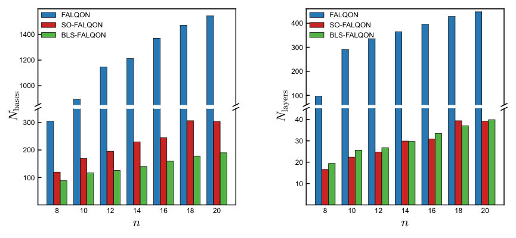
<figcaption class="paper-figure-caption"><b>Fig 1.</b> Figure 1: Average performance metrics as a function of graph size 𝑛for FALQON, SO-FALQON, and BLS-FALQON applied to unweighted 3-regular graphs, all required to reach the approximation ratio 𝑟GW = 0.932. (a) Total measurement bases count 𝑁bases. For BLS-FALQON, the measurement bases consumed during backtracking iterations are included in 𝑁bases. (b) Number of circuit layers 𝑁layers. The vertical axis breaks indicate truncation for better visibility.</figcaption>
</figure>
<figure class="paper-figure-card">
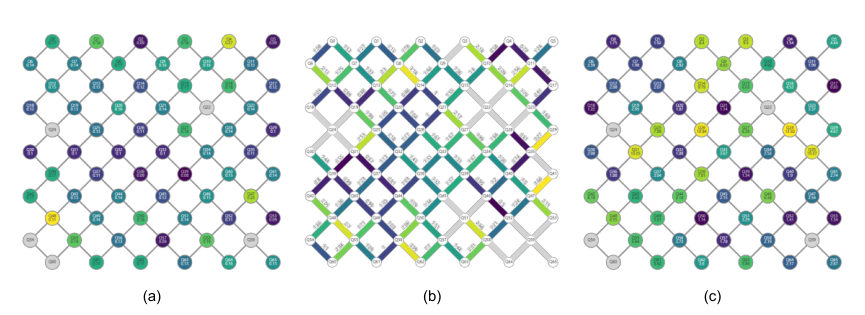
<figcaption class="paper-figure-caption"><b>Fig 2.</b> Figure 2: Calibration data for the zuchongzhi2 superconducting quantum processor, retrieved on May 27, 2026. The node-and-edge layout in each panel reflects the qubit connectivity topology of the processor. (a) Single-qubit gate error rate per qubit. (b) Two-qubit CZ gate error rate per coupler. (c) Readout error rate per qubit (unit: %).</figcaption>
</figure>
<figure class="paper-figure-card">
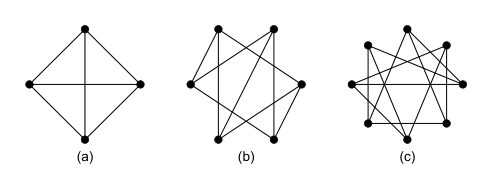
<figcaption class="paper-figure-caption"><b>Fig 3.</b> Figure 3: Unweighted 3-regular graph instances used in the real hardware experiments for (a) 𝑛= 4, (b) 𝑛= 6, and (c) 𝑛= 8.</figcaption>
</figure>
<figure class="paper-figure-card">
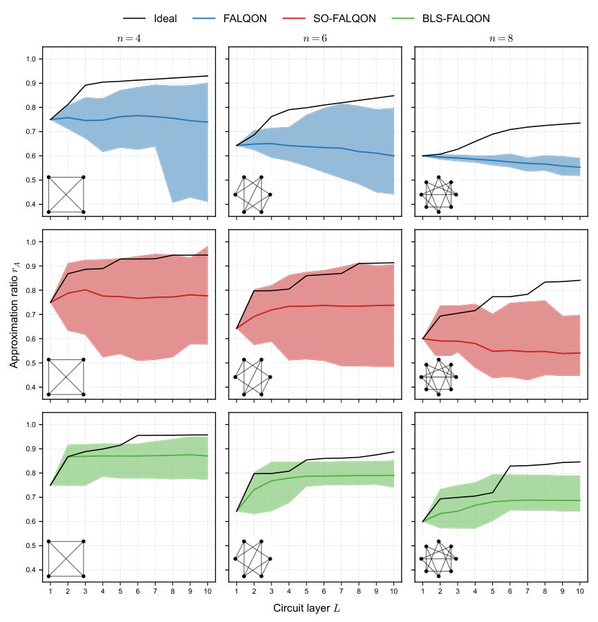
<figcaption class="paper-figure-caption"><b>Fig 4.</b> Figure 4: The approximation ratio results on the zuchongzhi2 superconducting quantum processor for unweighted 3-regular graph instances over 𝐿= 10 circuit layers. Rows correspond to FALQON, SO-FALQON and BLS-FALQON from top to bottom, and columns correspond to 𝑛= 4, 6, 8 from left to right. Black curves show the ideal statevector simulation. Colored curves show the average approximation ratio 𝑟𝐴over 20 independent runs. Shaded bands indicate the range of 𝑟𝐴 across all runs.</figcaption>
</figure>
</div>

<p><strong>Summary.</strong> This paper introduces BLS-FALQON, an improved quantum optimization algorithm designed to solve combinatorial problems with minimal quantum resources. By integrating a backtracking line search into the feedback mechanism, it significantly reduces measurement overhead compared to existing state-of-the-art methods like SO-FALQON. The method is validated through both extensive simulations and real-world experiments on superconducting quantum hardware.</p>
<p><strong>Why it may be interesting.</strong> This work directly addresses resource limitations (depth and measurement overhead) in variational quantum algorithms, which is crucial for scaling quantum computation to practical problems.</p>
<details>
<summary>Detailed structure</summary>
<p><strong>Main problem.</strong> Developing a quantum optimization algorithm that achieves low circuit depth and low measurement overhead for solving combinatorial optimization problems.</p>
<p><strong>Main result.</strong> The proposed BLS-FALQON method reduces the total measurement count by 37.7% compared to SO-FALQON in simulations and reduces estimated hardware execution time by 43% on real quantum hardware.</p>
<p><strong>Method.</strong> The authors propose BLS-FALQON, which adapts the feedback-based quantum optimization framework by incorporating a backtracking line search mechanism inspired by BLS theory.</p>
<p><strong>Model / system.</strong> The work is based on the FALQON algorithm, which uses a time-dependent Hamiltonian $H(t) = H_p + eta(t)H_d$ to drive the expectation value of the problem Hamiltonian $\langle H_p 
angle$ to decrease monotonically. Simulations use the max-cut problem, and experiments are performed on the Tianyan-176 quantum computer.</p>
<p><strong>Key observables.</strong> The primary observables are the expectation values $\langle H_p 
angle$, and the key metrics are circuit depth and total measurement count.</p>
<p><strong>Important parameters / regimes.</strong> The time step $\Delta t$, the control coefficient $eta(t)$, and the backtracking factor $   au \in (-1, 0)$ are important parameters.</p>
<p><strong>Assumptions / limitations.</strong> The core assumption for BLS-FALQON is that the backtracking mechanism guarantees a valid descent step ($\Delta E < 0$) by iteratively adjusting the control coefficient $eta^{(FO)}$ until the expectation value decreases.</p>
<p><strong>Figures summary.</strong> Not specified in the notes, but the results compare the performance (measurement count, depth, time) of BLS-FALQON against SO-FALQON and FALQON across simulations and hardware tests.</p>
<p><strong>Paper structure.</strong> The paper introduces the problem, details the FALQON framework, compares it to SO-FALQON, and then proposes and analyzes BLS-FALQON using theoretical proofs (Proposition 1) and validating it with numerical simulations and real quantum hardware experiments.</p>
</details>
<details>
<summary>Abstract</summary>
<p>Feedback-based ALgorithm for Quantum OptimizatioN (FALQON) is a hybrid quantum-classical algorithm for solving combinatorial optimization problems, which circumvents classical parameter optimization but requires a deep quantum circuit. To reduce circuit depth, Arai et al. proposed second-order FALQON (SO-FALQON), achieving the best depth reduction among existing approaches. However, SO-FALQON brings a 2.3 times per-step measurement overhead, as it needs to calculate an additional second-order control coefficient. In this paper, inspired by the Backtracking Line Search (BLS) theory, we propose another method called BLS-FALQON, which not only reduces circuit depth to a comparable extent, but also achieves fewer measurements than SO-FALQON. Numerical simulations on max-cut problem with 8 to 20 vertices demonstrate that BLS-FALQON reduces the total measurement count by 37.7% compared to SO-FALQON, while maintaining a comparable circuit depth. Furthermore, we conduct real quantum hardware experiments on the Tianyan-176 quantum computer, which uses the zuchongzhi2 superconducting quantum processor, confirming that BLS-FALQON remains effective under real quantum hardware conditions.</p>
</details>
<p><sub><a href="#top">↑ back to top</a></sub></p>

<p><a id="paper-2609.33251"></a></p>
<h3 id="high-fidelity-geometric-quantum-gates-exceeding-999-in-germanium-quantum-dots"><a href="http://arxiv.org/abs/2609.33251v1">High-fidelity geometric quantum gates exceeding 99.9% in germanium quantum dots</a></h3>
<p><strong>Authors:</strong> Yu-Chen Zhou, Rong-Long Ma, Zhenzhen Kong, Ao-Ran Li, Chengxian Zhang, Xin Zhang, Yang Liu, Hao-Tian Jiang, Zhi-Tao Wu, Gui-Lei Wang, Gang Cao, Guang-Can Guo, Hai-Ou Li, Guo-Ping Guo<br>
<strong>Type:</strong> experiment · <strong>Category:</strong> quantum information and computing · <strong>PDF:</strong> <a href="https://arxiv.org/pdf/2609.33251v1">https://arxiv.org/pdf/2609.33251v1</a><br>
<strong>Analysis basis:</strong> full PDF text, analyzed in chunks
<strong>Topic relevance:</strong> 🔥 <code>QC/QI experiment</code> <strong>4/5</strong> · <code>quantum measurements</code> <strong>2/5</strong></p>
<div class="figure-strip-hint">↔ Scroll figures horizontally</div>
<div class="paper-figures-scroll">
<figure class="paper-figure-card">
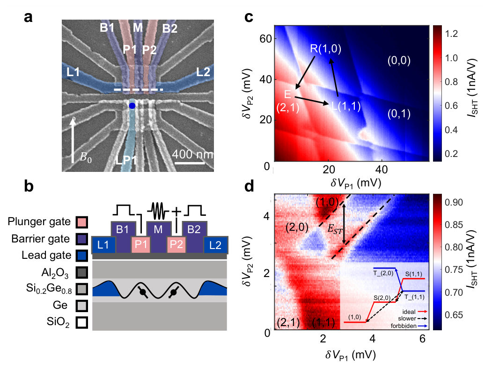
<figcaption class="paper-figure-caption"><b>Fig 1.</b> Fig 1 Device fabrication and experimental setup. a False-colored SEM images of the device. The upper side is the DQDs structure, and the lower region serves as a charge sensor (blue circle). b Cross-section schematic of the device along the white dashed line in a. Holes confined under gate P1 and P2 can tunnel to the reservoir under gate L1 and L2, with the tunnel rates adjusted by barrier gates B1 and B2. Square pulses and microwave pulses are applied to gates P1 and P2 for state readout and manipulation. c Charge stability diagram of DQDs. (N1, N2) represent the number of holes in the quantum dot under gate P1 and P2. Points E, L and R represent the relative position of square pulses for...</figcaption>
</figure>
<figure class="paper-figure-card">
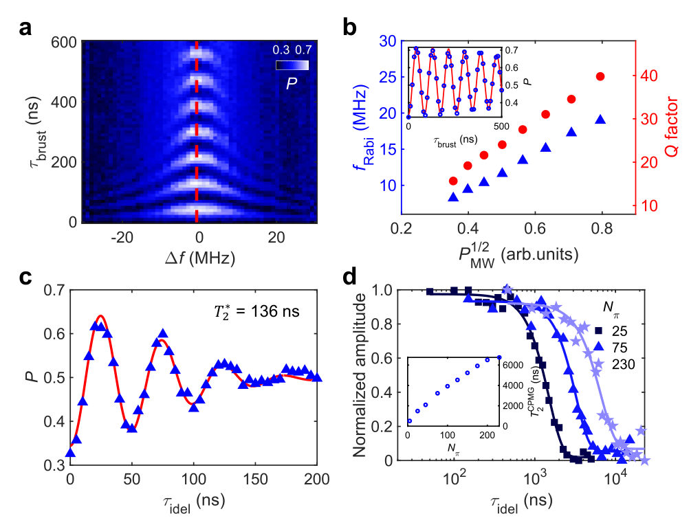
<figcaption class="paper-figure-caption"><b>Fig 2.</b> Fig 2 Qubit properties. a The Rabi chevron pattern: singlet state probability PS as a function of τburst and ∆f. b Rabi frequency (blue triangles) and the Q factor (red circles) measured under different microwave power P, showing no saturation. The largest fRabi of 19 MHz and Q factor of 39.78 are achieved. Inset: PS as a function of τburst along the red dashed line in a. The red solid line represents the fitting result, yielding a Rabi frequency of 11.56 MHz and Q factor of 18.04. c Ramsey fringe obtained by varying the idle time τidle, with the fitted dephasing time T ∗ 2 of 136 ns. The red solid line represents the fitting result. d Coherence decay under CPMG sequences as a function of...</figcaption>
</figure>
<figure class="paper-figure-card">
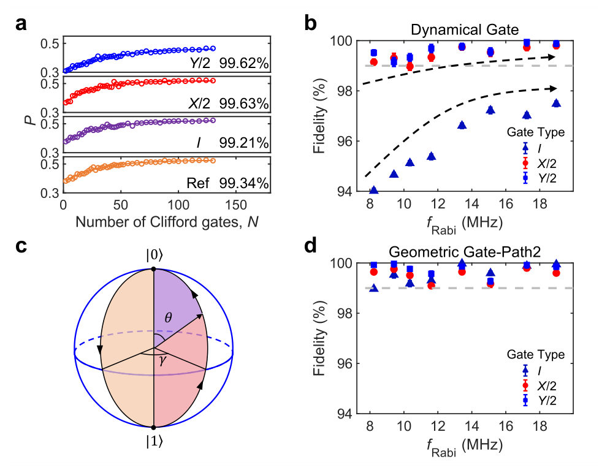
<figcaption class="paper-figure-caption"><b>Fig 3.</b> Fig 3 Control fidelity and geometric quantum computation. a Sequence fidelities for reference (abbreviated as “Ref”) and each interleaved characterized by RB, where N represent the number of Clifford gates in the reference sequences. The control fidelity is shown below the corresponding curves. b The control fidelities of the dynamical gate set extracted by GST as a function of fRabi. The black dashed arrows guide the eyes, indicating the tendency of the fidelity. The light grey line represents the 99% control fidelity threshold. As the Rabi frequency increases, the control fidelities of X/2 and Y /2 gates gradually improve to nearly 99.9%, whereas the I gate control fidelity saturates at...</figcaption>
</figure>
<figure class="paper-figure-card">
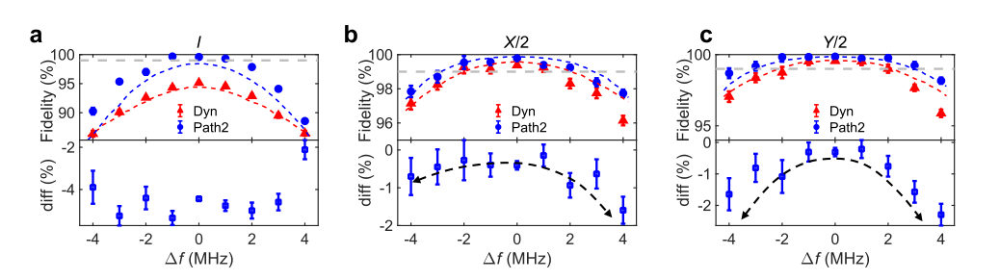
<figcaption class="paper-figure-caption"><b>Fig 4.</b> Fig 4 Noise-resilient feature of single-qubit geometric gates. The upper panels of a-c show that control fidelities of the I, X/2 and Y /2 gates, realized by both geometric and dynamical approaches, as a function of ∆f. The light grey lines represent 99% control fidelity threshold. Notably, even with detuning ∆f by ±2.5 MHz (±1.2 MHz), the control fidelities of geometric X/2 and Y /2 (I) gates can still reach 99%. The differences in the control fidelities between the two approaches are displayed in the lower panels. The black dashed arrows serve as visual guides to emphasize that as ∆f increases, the control fidelities of the dynamical gates decrease faster than those of the geometric gate....</figcaption>
</figure>
</div>

<p><strong>Summary.</strong> This work reports on achieving high-fidelity quantum gate operations using a single-hole spin qubit in a germanium quantum dot. By implementing geometric quantum computation, the researchers overcame fidelity limitations caused by off-resonance noise inherent in standard gate sequences. This demonstrates a promising, robust pathway toward scalable quantum computation in solid-state semiconductor platforms.</p>
<p><strong>Why it may be interesting.</strong> The focus on geometric control is highly relevant to open quantum systems, as it provides a mechanism to engineer robustness against environmental noise (like detuning) by leveraging geometric phases, a concept applicable across many physical platforms.</p>
<details>
<summary>Detailed structure</summary>
<p><strong>Main problem.</strong> The core challenge is achieving high-fidelity and robust qubit manipulations necessary for fault-tolerant quantum computation.</p>
<p><strong>Main result.</strong> The authors successfully demonstrated that implementing geometric quantum computation allows for qubit gate fidelities exceeding 99.9%, significantly outperforming standard dynamical gate methods, especially under noise conditions.</p>
<p><strong>Method.</strong> The research involves characterizing single-qubit gate control fidelities using gate set tomography (GST) and comparing these results against those obtained using geometric quantum computation (GQC) protocols.</p>
<p><strong>Model / system.</strong> The platform utilized is a single-hole spin qubit housed within a germanium quantum dot, controlled via Electric Dipole Spin Resonance (EDSR) mediated by intrinsic spin-orbit interaction (SOI).</p>
<p><strong>Key observables.</strong> Control fidelities for I, X/2, and Y/2 gates; Rabi frequency ($\omega_{Rabi}$); dephasing time ($T_2^*$).</p>
<p><strong>Important parameters / regimes.</strong> Gate fidelities exceeding 99.9%; microwave frequency detuning ($\pm 2.5$ MHz); Rabi frequency range up to 19 MHz.</p>
<p><strong>Assumptions / limitations.</strong> Standard gate sequences are severely limited by off-resonance noise, which GQC is proposed to overcome.</p>
<p><strong>Figures summary.</strong> Figures illustrate the device structure (SEM, cross-section), qubit characterization (Rabi/CPMG decay), and critically, compare the fidelity of dynamical gates versus geometric gates under varying Rabi frequencies and detunings.</p>
<p><strong>Paper structure.</strong> The paper first introduces the physical system and the need for high fidelity. It then characterizes the qubit using standard methods (GST) to identify noise limitations. The core contribution is the introduction and demonstration of GQC, showing its superior, noise-resilient performance compared to the standard methods.</p>
</details>
<details>
<summary>Abstract</summary>
<p>Achieving high-fidelity and robust qubit manipulations is a crucial requirement for realizing faulttolerant quantum computation. Here, we demonstrate a single-hole spin qubit in a germanium quantum dot and characterize its control fidelity using gate set tomography. The maximum control fidelities reach 97.48%, 99.81%, 99.88% for the I, X/2 and Y /2 gate, respectively. These results reveal that off-resonance noise during consecutive I gates in gate set tomography sequences severely limits qubit performance. Therefore, we introduce geometric quantum computation to realize noiseresilient qubit manipulation. The geometric gate control fidelities remain above 99% across a wide range of Rabi frequencies. The maximum fidelity surpasses 99.9%. Furthermore, the fidelities of geometric X/2 and Y /2 (I) gates exceed 99% even when detuning the microwave frequency by +-2.5 MHz (+-1.2 MHz), highlighting the noise-resilient feature. These results demonstrate that geometric quantum computation is a potential method for achieving high-fidelity qubit manipulation reproducibly in semiconductor quantum computation.</p>
</details>
<p><sub><a href="#top">↑ back to top</a></sub></p>

<p><a id="paper-2609.33229"></a></p>
<h3 id="in-plane-optimal-qubit-operation-with-control-fidelities-exceeding-99"><a href="http://arxiv.org/abs/2609.33229v1">In-plane optimal qubit operation with control fidelities exceeding 99 %</a></h3>
<p><strong>Authors:</strong> Yu-Chen Zhou, Zhenzhen Kong, Rong-Long Ma, Hao-Tian Jiang, Ao-Ran Li, Yang Zhong, Zhi-Tao Wu, Rui Zheng, Gui-Lei Wang, Gang Cao, Hai-Ou Li, Guo-Ping Guo<br>
<strong>Type:</strong> experiment · <strong>Category:</strong> quantum information and computing · <strong>PDF:</strong> <a href="https://arxiv.org/pdf/2609.33229v1">https://arxiv.org/pdf/2609.33229v1</a><br>
<strong>Analysis basis:</strong> full PDF text, analyzed in chunks
<strong>Topic relevance:</strong> 🔥 <code>QC/QI experiment</code> <strong>4/5</strong> · <code>quantum measurements</code> <strong>2/5</strong></p>
<div class="figure-strip-hint">↔ Scroll figures horizontally</div>
<div class="paper-figures-scroll">
<figure class="paper-figure-card">
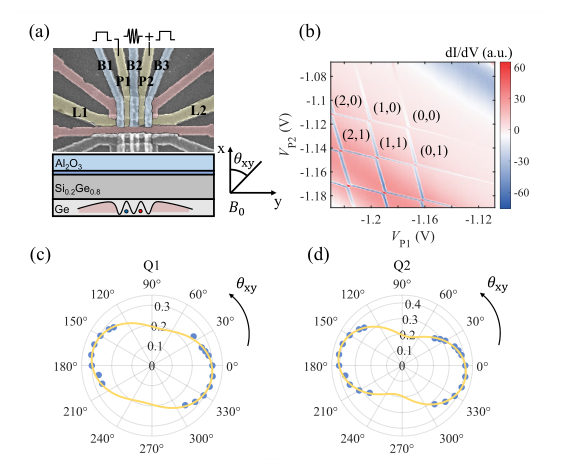
<figcaption class="paper-figure-caption"><b>Fig 1.</b> FIG. 1. (a) The lower part of the figure shows false-colored scanning electron microscopy (SEM) images of the double quantum dot (DQD) device. The upper section corresponds to the DQD structure defined by a set of electrostatic gates, while the lower section of the device hosts a single-hole tran- sistor that is used as a charge sensor. Along the white dashed line, a cross-sectional schematic of the device is illustrated in the upper part of the figure. The DQD is electrostatically confined by aluminum gates, including lead gates L1 and L2, barrier gates B1–B3, and plunger gates P1 and P2. Three- stage voltage pulses together with microwave signals are ap- plied to gates P1 and P2 for qubit...</figcaption>
</figure>
<figure class="paper-figure-card">
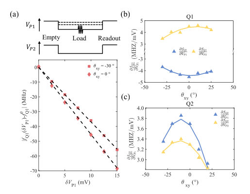
<figcaption class="paper-figure-caption"><b>Fig 2.</b> FIG. 2. (a) Top: Pulse sequence used to measure the longitu- dinal spin–electric susceptibility, LSESQ1 and LSESQ2. The sequence consists of three stages—Empty, Load, and Read- out—corresponding to the charge configurations (1,0), (1,1) and (1,0), respectively. Qubit manipulation is performed dur- ing the Load stage. By varying the voltage applied to plunger gate P1 or P2, the resonance frequency of qubit Q1 and Q2 is shifted accordingly. The resulting gate-voltage-dependent qubit frequency shifts are extracted and plotted, as shown in the lower panel of (a). The frequency shifts exhibit a linear dependence on the applied gate voltage, from which the LSES is obtained. The lower panel shows...</figcaption>
</figure>
<figure class="paper-figure-card">
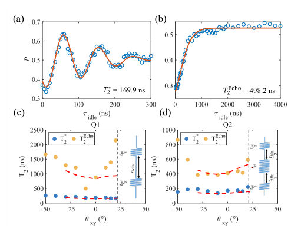
<figcaption class="paper-figure-caption"><b>Fig 3.</b> FIG. 3. (a) Ramsey fringe measured as a function of the idle time τidle with a detuning of 10 MHz, yielding a fitted dephasing time T ∗ 2 = 169.9, ns at θxy = 0◦for qubit Q1. (b) Hahn-echo fringe measured by varying τidle, with a fitted de- coherence time T Echo 2 = 498.2, ns at θxy = 0◦for qubit Q1. In both panels (a-b), the orange solid lines denote the fits to the experimental data. (c) Dephasing time T ∗ 2 and Hahn-echo coherence time T Echo 2 of qubit Q1 as functions of the in-plane magnetic-field angle θxy. While T ∗ 2 remains essentially con- stant over the measured angular range, T Echo 2 shows a non- monotonic dependence, first decreasing and then increasing with θxy. This trend...</figcaption>
</figure>
<figure class="paper-figure-card">
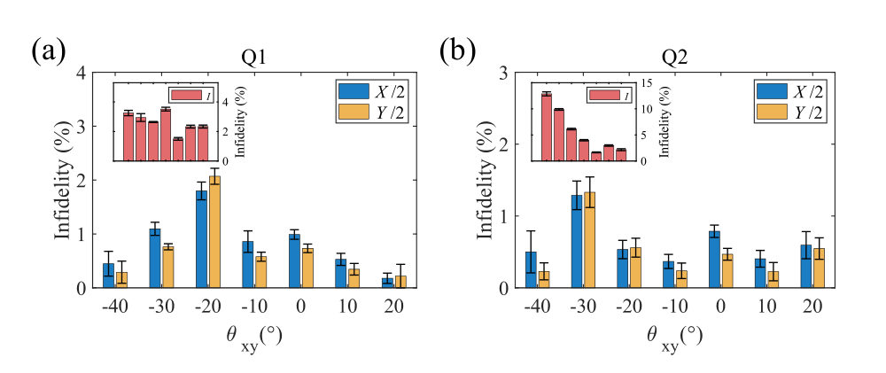
<figcaption class="paper-figure-caption"><b>Fig 4.</b> FIG. 4. (a–b) Control infidelities of the gate set I/2, X/2, Y/2 as functions of the in-plane magnetic-field angle θxy. The infidelities of the X/2 and Y/2 gates exhibit non-monotonic angular dependence, first increasing and then decreasing with θxy. The maximum gate error occur at magnetic-field orientations corresponding to the shortest T Echo 2 . For qubit Q1 (Q2), the control infidelity at the optimal operating point is reduced by approximately one order of magnitude (a factor of five) compared to the worst case. The insets show the I gate infidelity. The horizontal axis is θxy, and the vertical axis is the gate infidelity, as in the main panel. Although the I gate infidelity is...</figcaption>
</figure>
<figure class="paper-figure-card">
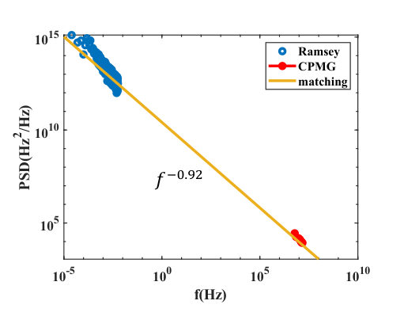
<figcaption class="paper-figure-caption"><b>Fig 5.</b> FIG. 5. Noise spectrum extracted from Ramsey mea- surements over a laboratory timescale of 55 h (blue circles) and from dynamical decoupling experiments using CPMG se- quences (red circles). The solid line corresponds to a 1/f 0.92</figcaption>
</figure>
</div>

<p><strong>Summary.</strong> This paper reports on optimizing hole spin qubits in germanium quantum dots by tuning the in-plane magnetic field orientation. The authors found that minimizing the qubit's susceptibility to charge noise significantly enhances coherence times and gate fidelity. This work advances the feasibility of using hole spin qubits for scalable quantum computation.</p>
<p><strong>Why it may be interesting.</strong> This work provides concrete experimental evidence for mitigating charge noise effects in solid-state spin qubits by engineering the magnetic field orientation, which is crucial for scaling quantum processors.</p>
<details>
<summary>Detailed structure</summary>
<p><strong>Main problem.</strong> The primary goal is to improve the coherence time and control fidelity of hole spin qubits, which are susceptible to charge noise due to their physical mechanisms.</p>
<p><strong>Main result.</strong> By optimizing the orientation of the in-plane magnetic field, the authors achieved a five-fold enhancement in Hahn-echo coherence time and demonstrated a maximum gate fidelity of 99.82%.</p>
<p><strong>Method.</strong> The study involves measuring the anisotropic spin-electric susceptibility to charge noise while varying the magnetic field orientation and performing gate set tomography.</p>
<p><strong>Model / system.</strong> The research uses hole spin qubits realized in planar germanium quantum dots (DQD). The system's properties are highly dependent on the orientation of an applied in-plane magnetic field and gate voltages.</p>
<p><strong>Key observables.</strong> Longitudinal spin-electric susceptibility (LSES), Hahn-echo coherence time (T_Echo^2), and maximum gate fidelity.</p>
<p><strong>Important parameters / regimes.</strong> In-plane magnetic field orientation ($  heta_{xy}$), charge noise sensitivity, and gate fidelity (e.g., 99.82%).</p>
<p><strong>Assumptions / limitations.</strong> The coherence time limitation is directly correlated with the minimization of the spin-electric susceptibility, suggesting charge noise is the dominant decoherence source.</p>
<p><strong>Figures summary.</strong> Figures illustrate the anisotropy of effective g-factors and the angular dependence of LSES, T_Echo^2, and the resulting quality factors (Q*) for the two qubits (Q1 and Q2).</p>
<p><strong>Paper structure.</strong> The paper systematically investigates the angular dependence of qubit parameters, linking the minimization of charge noise susceptibility (LSES) to the maximization of coherence time and gate fidelity.</p>
</details>
<details>
<summary>Abstract</summary>
<p>Hole spin qubits based on semiconductor quantum dots are promising for building future large-scale quantum computers owing to their all-electrical manipulation. However, abundant physical mechanisms of valence band holes lead to anisotropic qubit properties. There is an opportunity to prolong the coherence time and achieve high-fidelity qubit manipulations. Here, we report a single-hole spin qubit in a planar germanium quantum dot and investigate its anisotropic susceptibility to charge noise under an in-plane magnetic field. By correlating the longitudinal spin-electric susceptibility with qubit coherence and control performance, we identify an optimal operating point where the sensitivity to charge noise is minimized. We find that optimizing the magnetic-field orientation reduces the spin-electric susceptibility, resulting in a five-fold enhancement of the Hahn-echo coherence time and a nearly tenfold suppression of control infidelity. At the optimal operating point, gate set tomography demonstrates the maximum gate fidelity of 99.82 %. Our finding enhances the prospects of hole spin qubits for scalable quantum information processing.</p>
</details>
<p><sub><a href="#top">↑ back to top</a></sub></p>

<p><a id="paper-2609.35523"></a></p>
<h3 id="induced-coherence-in-quantum-and-classical-interferometry-origin-and-control"><a href="http://arxiv.org/abs/2609.35523v1">Induced Coherence in Quantum and Classical Interferometry: Origin and Control</a></h3>
<p><strong>Authors:</strong> Balakrishnan Viswanathan, Ravi Kamal Pandey, Devendra Kumar Mishra, Sibasish Ghosh, Prasanta K. Panigrahi<br>
<strong>Type:</strong> theory · <strong>Category:</strong> other · <strong>PDF:</strong> <a href="https://arxiv.org/pdf/2609.35523v1">https://arxiv.org/pdf/2609.35523v1</a><br>
<strong>Analysis basis:</strong> full PDF text, analyzed in chunks
<strong>Topic relevance:</strong> 🔥 <code>interference shaping light</code> <strong>4/5</strong> · <code>quantum measurements</code> <strong>2/5</strong></p>
<div class="figure-strip-hint">↔ Scroll figures horizontally</div>
<div class="paper-figures-scroll">
<figure class="paper-figure-card">
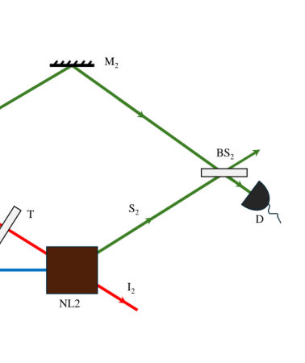
<figcaption class="paper-figure-caption"><b>Fig 1.</b> Fig. 1. Schematic of quantum induced coherence interferometer: A weak laser passes through a 50 −50 beam splitter (𝐵𝑆1), and pumps two identical nonlinear crystals 𝑁𝐿1 and 𝑁𝐿2. Each crystal, through spontaneous parametric down-conversion (SPDC), produces a pair of correlated photons which we call signal 𝑆(green lines) and idler 𝐼 (red lines); 𝑁𝐿1 and 𝑁𝐿2 produce pairs (𝑆1, 𝐼1) and (𝑆2, 𝐼2), respectively. The idler 𝐼1 from 𝑁𝐿1 is aligned with the idler 𝐼2 from 𝑁𝐿2. The extent of alignment is controlled by a filter with variable transmission coefficient (𝑇) placed between the two crystals. The two signal photons 𝑆1 and 𝑆2 pass through a 50 −50 beamsplitter (𝐵𝑆2) and the interference pattern...</figcaption>
</figure>
</div>

<p><strong>Summary.</strong> This paper theoretically analyzes induced coherence in quantum interferometers, showing that the degree of interference, predictability, and entanglement are linked by a universal triality relation. The key finding is that coherence is fundamentally induced by achieving path indistinguishability between photon sources. This provides a quantitative understanding of the trade-off between these quantum properties.</p>
<p><strong>Why it may be interesting.</strong> This work provides a detailed theoretical framework connecting fundamental quantum concepts (coherence, entanglement, indistinguishability) to a measurable physical phenomenon (interferometry), which is highly relevant to quantum optics and open quantum systems.</p>
<details>
<summary>Detailed structure</summary>
<p><strong>Main problem.</strong> The paper investigates the origin and control of coherence and entanglement in interferometry, specifically demonstrating the persistence of a universal 'triality relation' involving coherence, predictability, and entanglement.</p>
<p><strong>Main result.</strong> The authors prove that the triality relation ($V^2 + P^2 + C^2 = 1$) holds in the quantum induced coherence interferometer, showing that path indistinguishability is the key mechanism inducing coherence and entanglement.</p>
<p><strong>Method.</strong> The analysis uses quantum state formalism, deriving key observables like visibility (V), predictability (P), and concurrence (C) based on the overlap of idler photon paths.</p>
<p><strong>Model / system.</strong> The system is a quantum induced coherence interferometer utilizing two nonlinear crystals ($    ext{NL}_1,  ext{NL}_2$) pumped by a weak laser to generate correlated photon pairs via SPDC.</p>
<p><strong>Key observables.</strong> Visibility (V), Predictability (P), and I-concurrence ($C_I$).</p>
<p><strong>Important parameters / regimes.</strong> Idler mode overlap/Transmission coefficient ($|T|$), background field mean photon number ($ar{n}$), and the mixedness degree ($\eta$).</p>
<p><strong>Assumptions / limitations.</strong> The analysis is performed in the low-gain regime, assuming two-photon emission dominates, and later extends to mixed states.</p>
<p><strong>Figures summary.</strong> Figure 1 schematically illustrates the interferometer setup, showing the pumping of two crystals and the crucial alignment of the idler paths.</p>
<p><strong>Paper structure.</strong> The paper first establishes the quantum model and the triality relation in the low-gain regime. It then explores the role of idler alignment ($|T|$) and later extends the analysis to include background fields ($ar{n}$) and mixed states ($\eta$).</p>
</details>
<details>
<summary>Abstract</summary>
<p>The wave-particle duality that manifests in the Young's double-slit interferometry satisfying the well known Englert-Greenberger-Yasin inequality has recently been shown to obey a universal triality relation involving coherence, predictability and rather surprisingly entanglement. In the present work, we explicitly demonstrate the persistence of the triality relation in the quantum induced coherence interferometer and the classical configuration recovers the well known duality inequality. Furthermore, we explore the origin of coherence and entanglement, in the induced coherence interferometer, and means to control them. We show that path indistinguishability (or intrinsic indistinguishability of the sources) in our setup plays a complementary role in influencing both interference and entanglement. We bring out manifestly the nature of coherence in both classical and quantum versions of induced coherence interferometers.</p>
</details>
<p><sub><a href="#top">↑ back to top</a></sub></p>

<p><a id="paper-2609.33576"></a></p>
<h3 id="effective-atom-dimer-bands-of-three-body-lattice-systems-at-strong-coupling-exact-critical-mass-ratios-and-a-statistics-quasimomentum-duality"><a href="http://arxiv.org/abs/2609.33576v1">Effective atom-dimer bands of three-body lattice systems at strong coupling: exact critical mass ratios and a statistics-quasimomentum duality</a></h3>
<p><strong>Authors:</strong> Mikhail V. Dolgopolov<br>
<strong>Type:</strong> theory · <strong>Category:</strong> quantum gases · <strong>PDF:</strong> <a href="https://arxiv.org/pdf/2609.33576v1">https://arxiv.org/pdf/2609.33576v1</a><br>
<strong>Analysis basis:</strong> full PDF text, analyzed in chunks
<strong>Topic relevance:</strong> 🔥 <code>analog quantum simulation</code> <strong>4/5</strong></p>
<div class="figure-strip-hint">↔ Scroll figures horizontally</div>
<div class="paper-figures-scroll">
<figure class="paper-figure-card">
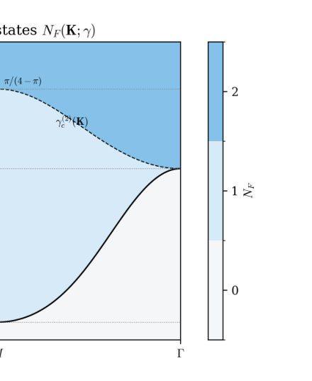
<figcaption class="paper-figure-caption"><b>Fig 1.</b> Figure 1. Number NF (K; γ) of 2+1 fermionic atom–dimer states along Γ–X–M–Γ as a function of the mass ratio γ = mf/m3, from the counting criterion (Theorem 5.3) with C = γ</figcaption>
</figure>
<figure class="paper-figure-card">
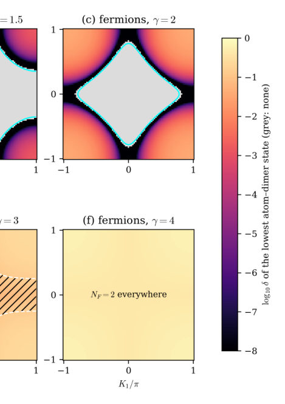
<figcaption class="paper-figure-caption"><b>Fig 2.</b> Figure 2. Brillouin-zone maps of the binding energy of the lowest atom–dimer state, log10 δ, computed in the infinite lattice from the exact threshold matrix M(δ) of Lemma 5.1 (91×91 grid; grey: no state). (a) Bosons, hB. (b)–(f) 2+1 fermions, hF , at γ = 1.5, 2, 2.5, 3, 4. Cyan: exact zone boundary from PK (PK(1) = 0 for bosons, γ = γc(K) for fermions); white dashed and hatched: region with a second fermionic state, γ &gt; γ(2) c (K). Panel (c) is panel (a) translated by π up to a constant shift in energy, as required by Theorem 8.1 (the duality gives hF (K+π; γ = 2) = hB(K)+2, so binding energies coincide but thresholds differ by 2). The black band inside each boundary, where δ &lt; 10−8, is...</figcaption>
</figure>
<figure class="paper-figure-card">
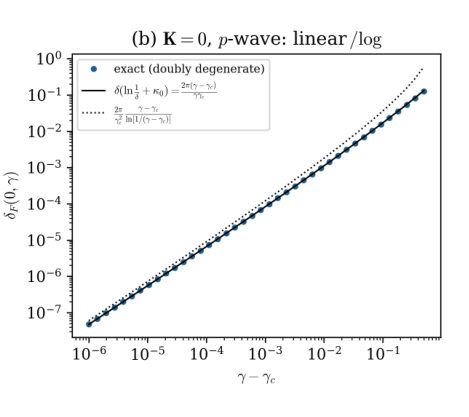
<figcaption class="paper-figure-caption"><b>Fig 3.</b> Figure 3. Critical onset of the 2+1 fermionic atom–dimer state (Theorem 7.1); dots are exact infinite-lattice roots of the counting criterion. (a) K = π, s-wave: against 1/(γ −1) the data fall on the straight line 16 e−πγ/(γ−1) of (9) down to δ ∼10−18, an onset of infinite order. (b) K = 0, p-wave (doubly degenerate): the implicit law (10) (solid) is exact to plotting accuracy over six decades of γ −γc, while its explicit leading-log form (dotted) converges only logarithmically (cf. Table 3).</figcaption>
</figure>
<figure class="paper-figure-card">
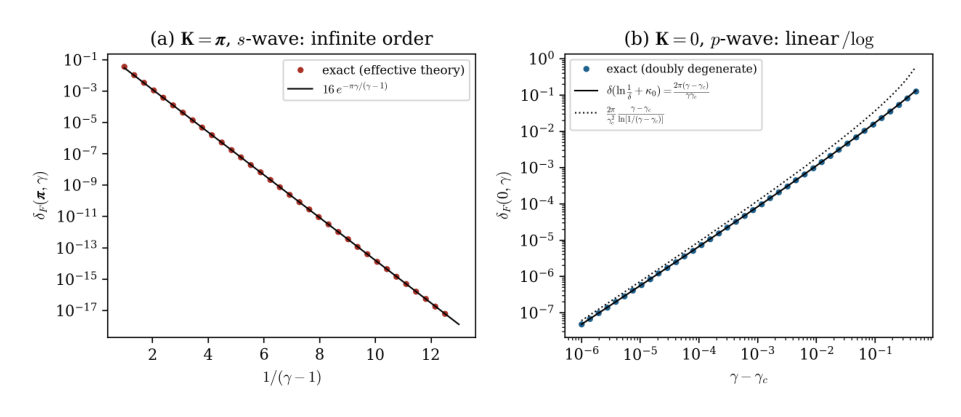
<figcaption class="paper-figure-caption"><b>Fig 4.</b> Figure 4 shows the fermionic binding energies along the high-symmetry path for several mass ratios. At γ = 2 the fermionic curve coincides point by point with the bosonic curve translated by π, as Theorem 8.1 requires; for γ = 3 and γ = 4 the second state of Corollary 6.5 (dashed) is visible, degenerate with the first at Γ for γ = 3 (p-wave pair, δ = 0.0519) and separated at M for γ = 4 (δ = 0.5868 and 0.1473, Table 5).</figcaption>
</figure>
<figure class="paper-figure-card">
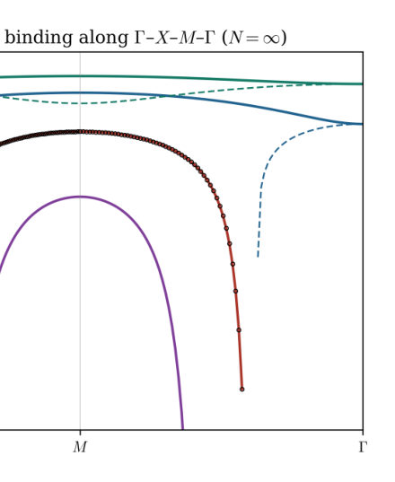
<figcaption class="paper-figure-caption"><b>Fig 5.</b> Figure 4. Binding energies δF (K; γ) of the 2+1 fermionic atom–dimer states along Γ–X–M–Γ in the infinite lattice, for γ = 1.5, 2, 3, 4 (solid: lowest state; dashed: second state). Open circles: bosonic δB(K + π), which coincides with the γ = 2 curve (Theorem 8.1). The steep descent at the zone edges is the essential singularity of Theorem 7.2. The values at Γ and M reproduce Table 5.</figcaption>
</figure>
</div>

<p><strong>Summary.</strong> This theoretical paper investigates the effective energy bands for three-body quantum systems on a lattice under strong contact interactions. By employing Feshbach-Schur reduction, the authors derive explicit Hamiltonians and determine the critical mass ratios governing the existence of bound states across the entire Brillouin zone. The results establish exact mathematical dualities between particle statistics and momentum shifts.</p>
<p><strong>Why it may be interesting.</strong> This work provides rigorous, exact analytical results for strongly interacting, mass-imbalanced quantum systems, which are highly relevant for modeling quantum simulation experiments using optical lattices.</p>
<details>
<summary>Detailed structure</summary>
<p><strong>Main problem.</strong> The paper analyzes the effective energy bands for three-body systems (bosonic and fermionic) interacting via contact potentials on a lattice in the strong coupling limit.</p>
<p><strong>Main result.</strong> It derives explicit effective Hamiltonians and determines the complete atom-dimer zone and the critical mass ratio $\pi/(\pi-2)$ at zero quasimomentum, establishing exact dualities between statistics and quasimomentum shifts.</p>
<p><strong>Method.</strong> The methodology involves Feshbach-Schur reduction onto the degenerate eigenvalue subspace, followed by solving a threshold problem formulated as a $4 	imes 4$ Hermitian matrix criterion.</p>
<p><strong>Model / system.</strong> The system consists of three particles (bosons or fermions) on a square lattice ($\mathbb{Z}^2$) with contact interactions of infinite strength ($\mu 	o \infty$). The analysis focuses on the 'atom-dimer sector' of the three-body Hamiltonian.</p>
<p><strong>Key observables.</strong> Effective Hamiltonians ($h_B, h_F$), critical mass ratio $\gamma_c(\mathbf{K})$, and the onset laws for bound states.</p>
<p><strong>Important parameters / regimes.</strong> Strong coupling limit ($\mu 	o \infty$), quasimomentum $\mathbf{K}$ across the entire Brillouin zone, and the statistics (3B, 2+1F, 2+1B).</p>
<p><strong>Assumptions / limitations.</strong> The analysis relies on the Feshbach-Schur reduction technique and asymptotic expansions for lattice sums in the small parameter $\delta$.</p>
<p><strong>Figures summary.</strong> The notes mention tables summarizing the status of the problem and providing numerical convergence checks for lattice constants and binding energies.</p>
<p><strong>Paper structure.</strong> The paper proceeds by first establishing the general framework using Feshbach-Schur reduction, then deriving the explicit effective Hamiltonians for different statistics, followed by determining the zones and critical ratios via matrix criteria, and concluding with proofs of dualities and onset laws.</p>
</details>
<details>
<summary>Abstract</summary>
<p>We study three particles on the square lattice with contact interactions of infinite strength, for all total quasimomenta, for three statistics: three identical bosons, two identical fermions plus a third particle, and two identical bosons plus a third particle. Previous work treated only the trimer and zero quasimomentum. Here the atom-dimer sector is analyzed on the whole Brillouin zone. A Feshbach-Schur reduction onto the infinitely degenerate eigenvalue 1 of the pair-contact operator gives explicit effective Hamiltonians with proved first-order error. The threshold problem reduces to a 4x4 Hermitian matrix criterion built from the two-point resistances of the square lattice, and hence to a quartic polynomial. This yields the complete atom-dimer zone and the critical mass ratio on the Brillouin zone, with bound between 1 and pi/(pi-2), and closed forms at all symmetry points. We prove: the zones in closed form; the critical mass ratio with exact value pi/(pi-2) at zero quasimomentum, reproducing a numerical value; at most two atom-dimer states for every quasimomentum and mass ratio; the onset laws, an essential singularity on the zone boundary and a linear-over-logarithm onset in the pure p-wave; two exact dualities showing that a change of statistics is equivalent to a shift of quasimomentum by pi; and the global range of the second fermionic threshold. The onset laws admit a renormalization-group reading: the inverse lattice Green function is a marginal s-wave coupling, binding energies arise by dimensional transmutation with lattice scale 16, and the zone boundary is of marginal (BCS/Kondo) type rather than of Berezinskii-Kosterlitz-Thouless type. All constants are verified independently by lattice quadrature, computer algebra, exact diagonalisation, and infinite-lattice solvers.</p>
</details>
<p><sub><a href="#top">↑ back to top</a></sub></p>

<p><a id="paper-2609.31913"></a></p>
<h3 id="gate-synthesis-in-dephasing-limited-nitrogen-vacancy-ensembles"><a href="http://arxiv.org/abs/2609.31913v1">Gate Synthesis in Dephasing-Limited Nitrogen-Vacancy Ensembles</a></h3>
<p><strong>Authors:</strong> Ankita Chakravarty, Arnaud Carignan-Dugas, Eva Dupont-Ferrier, Yves Bérubé-Lauzière<br>
<strong>Type:</strong> experiment · <strong>Category:</strong> quantum information and computing · <strong>PDF:</strong> <a href="https://arxiv.org/pdf/2609.31913v1">https://arxiv.org/pdf/2609.31913v1</a><br>
<strong>Analysis basis:</strong> full PDF text, analyzed in chunks
<strong>Topic relevance:</strong> 🔥 <code>QC/QI experiment</code> <strong>4/5</strong></p>
<div class="figure-strip-hint">↔ Scroll figures horizontally</div>
<div class="paper-figures-scroll">
<figure class="paper-figure-card">
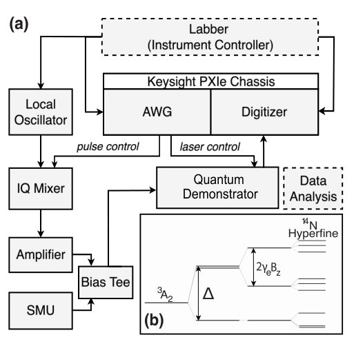
<figcaption class="paper-figure-caption"><b>Fig 1.</b> FIG. 1. (a) Schematic of the experimental setup, adapted from [20] under the terms of the Optica Open Access Publish- ing Agreement. The AWG produces the MW control signals, which are upconverted using an IQ mixer driven by a local oscillator. The resulting signal is amplified and delivered to the NV ensemble inside the Quantum Demonstrator platform developed by SBQuantum. Spin-state-dependent fluorescence is collected optically and digitized using a high-speed digitizer to obtain the measured signal. (b) Energy level diagram of the ground state of the negatively charged NV center in diamond. The ground-state spin triplet (3A2) exhibits a zero-field split- ting of ∆= 2.87 GHz between the ms...</figcaption>
</figure>
<figure class="paper-figure-card">
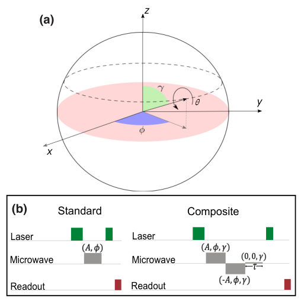
<figcaption class="paper-figure-caption"><b>Fig 2.</b> FIG. 2. (a) Bloch sphere representation of the effective single- qubit rotation generated by the MW control Hamiltonian in Eq. (9). The phase ϕ defines the ideal rotation axis in the equatorial (xy) plane, γ characterizes the tilt of the experi- mentally realized rotation axis away from this ideal axis, and θ denotes the rotation angle about the tilted experimental axis, as described by the parametrized primitive V (θ, ϕ, γ) used throughout this work. (b) MW pulse sequences used to implement the calibrated π/2 primitive: The standard im- plementation consists of a single rectangular MW pulse of duration 54 ns. The composite implementation replaces this with a structured sequence of two...</figcaption>
</figure>
<figure class="paper-figure-card">
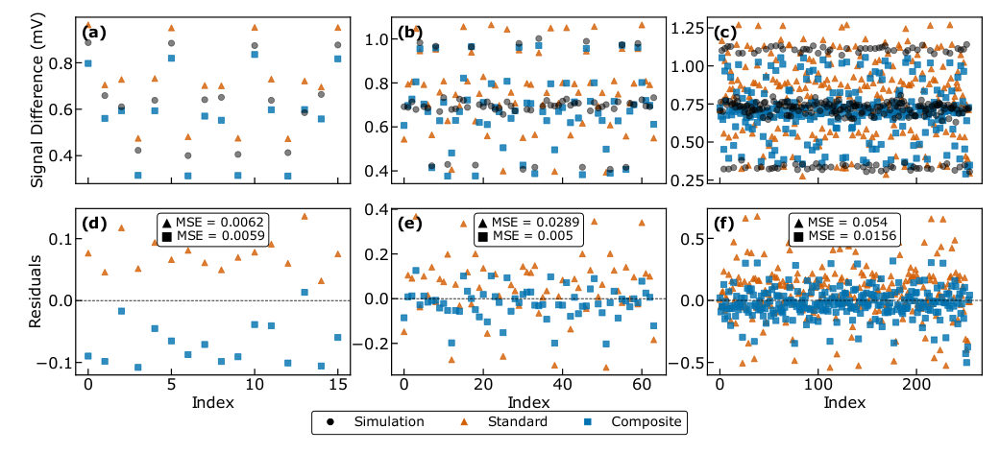
<figcaption class="paper-figure-caption"><b>Fig 3.</b> FIG. 3. Comparison of structured pulse sequences implemented with standard and composite π/2 pulses, alongside ideal numerical simulations: (a) Two-gate sequences, (b) Three-gate sequences, (c) Four-gate sequences; (d)–(f) Corresponding residuals between experiment and ideal simulation, quantified using the mean squared error (MSE). The horizontal axis, ”Index”, denotes the iteration number within each gate sequence. Both standard and composite pulse implementations use the same ZXZXZ framework, with the calibrated Xπ/2 primitive providing the basis for implementing arbitrary π/2 rotations through phase control. The standard and composite pulses therefore represent two physical...</figcaption>
</figure>
<figure class="paper-figure-card">
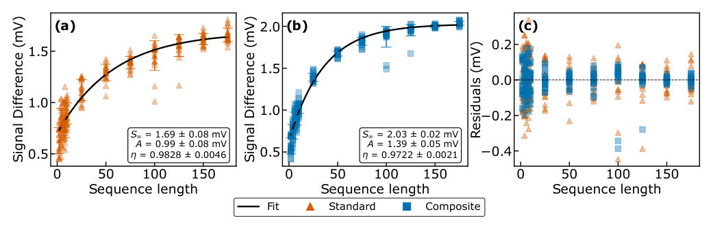
<figcaption class="paper-figure-caption"><b>Fig 4.</b> FIG. 4. Randomized benchmarking (RB) measurements for sequence lengths n = [2, 4, 6, 8, 10, 25, 50, 75, 100, 125, 150, 175] Clifford gates. (a) Standard π/2 pulse implementation (54 ns per pulse). (b) Composite π/2 pulse implementation (174 ns per pulse). (c) Deviation of the measured signal from the mean across randomized circuits for each sequence length, illustrating reduced fluctuations for the composite pulse. In contrast to structured-sequence experiments, RB probes error accumulation through random Clifford gate averaging and is primarily sensitive to incoherent processes such as dephasing. Both implementa- tions show similar overall decay trends, despite the composite pulse having a...</figcaption>
</figure>
<figure class="paper-figure-card">
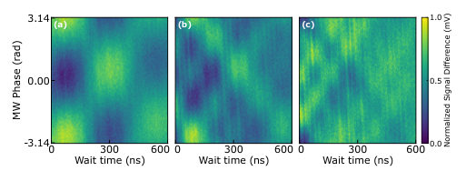
<figcaption class="paper-figure-caption"><b>Fig 5.</b> FIG. 6. 2D calibration maps of the normalized signal differ- ence as a function of global phase γ and wait time τ, shown for sequences of (a) two, (b) three, and (c) four repeated com- posite π/2 pulses.</figcaption>
</figure>
</div>

<p><strong>Summary.</strong> This research tackles the difficulty of performing reliable quantum gates in NV ensembles due to short coherence times and pulse imperfections. By implementing a ZXZXZ gate decomposition, the authors developed and tested a composite pulse sequence. They demonstrated that this composite pulse significantly mitigates error accumulation compared to standard pulses, providing a practical route for robust quantum control in solid-state quantum memories.</p>
<p><strong>Why it may be interesting.</strong> This work provides concrete, experimental protocols for achieving robust quantum control in solid-state qubits, directly relevant to building quantum processors based on NV centers.</p>
<details>
<summary>Detailed structure</summary>
<p><strong>Main problem.</strong> The paper addresses the challenge of implementing reliable multi-pulse quantum gate sequences in Nitrogen-Vacancy (NV) ensembles, which suffer from short coherence times and hardware imperfections.</p>
<p><strong>Main result.</strong> A composite pulse sequence was shown to suppress the accumulation of coherent control errors by over 70% compared to standard pulses over longer gate sequences.</p>
<p><strong>Method.</strong> The authors synthesized universal single-qubit gates using a ZXZXZ decomposition, comparing standard pulse sequences against specially designed composite pulses.</p>
<p><strong>Model / system.</strong> The system is an ensemble of NV centers in diamond, controlled using microwave pulses. The physics is modeled using the ground-state Hamiltonian, focusing on single-qubit rotations parameterized by pulse sequences.</p>
<p><strong>Key observables.</strong> Mean Squared Error (MSE) for gate fidelity and the decay parameter ($\eta$) from Randomized Benchmarking (RB).</p>
<p><strong>Important parameters / regimes.</strong> Short coherence time ($T_2^* \sim 1 \mu	ext{s}$), high-power operation regime where Rabi frequency approaches hyperfine splitting.</p>
<p><strong>Assumptions / limitations.</strong> The analysis assumes that gate performance is limited by the accumulation of coherent control errors during repeated pulse applications, rather than just single-pulse fidelity.</p>
<p><strong>Figures summary.</strong> Figures compare MSE for standard vs. composite pulses across multiple gate applications, and show RB decay parameters ($\eta$) for both implementations.</p>
<p><strong>Paper structure.</strong> The paper establishes the need for robust gate synthesis, details the ZXZXZ decomposition using calibrated $\pi/2$ primitives, compares standard vs. composite pulse performance via MSE, and analyzes RB results to quantify error suppression.</p>
</details>
<details>
<summary>Abstract</summary>
<p>Ensemble nitrogen-vacancy (NV) centers are widely used for quantum sensing and magnetometry, where performance depends on the accurate implementation of microwave pulse sequences. In these systems, inhomogeneous broadening and short coherence times limit reliable multi-pulse control, while hardware imperfections and off-resonant excitation distort implemented rotations, making direct calibration of arbitrary gates tedious. To address this, we implement a control framework with a ZXZXZ gate decomposition which uses fixed-angle, phase-parameterized pulses, enabling universal single-qubit control from a single calibrated $ π/2$ primitive ($X_{π/2}$) along with virtual Z operations. We compare a standard pulse with a composite pulse designed for high-power operation in a regime where the Rabi frequency is comparable to the hyperfine splitting, leading to non-uniform evolution across hyperfine levels. Using pre-determined combinations of $π/2$ pulse sequences, we observe that standard pulses rapidly deviate from ideal behavior under repeated application, while the composite pulse suppresses this error accumulation by more than 70$\%$ for longer sequences despite its longer duration. In contrast, randomized benchmarking yields similar decay factors for both implementations, highlighting its limited sensitivity to coherent control errors. These results establish a practical route to robust control in short-coherence ensemble systems and emphasize the importance of pulse-level characterization.</p>
</details>
<p><sub><a href="#top">↑ back to top</a></sub></p>

<p><a id="paper-2609.35648"></a></p>
<h3 id="learning-sparse-quantum-states-from-single-qubit-measurements"><a href="http://arxiv.org/abs/2609.35648v1">Learning sparse quantum states from single-qubit measurements</a></h3>
<p><strong>Authors:</strong> Su-un Lee, Liang Jiang, Kunal Sharma<br>
<strong>Type:</strong> theory · <strong>Category:</strong> quantum information and computing · <strong>PDF:</strong> <a href="https://arxiv.org/pdf/2609.35648v1">https://arxiv.org/pdf/2609.35648v1</a><br>
<strong>Analysis basis:</strong> full PDF text, analyzed in chunks
<strong>Topic relevance:</strong> 🔥 <code>quantum measurements</code> <strong>4/5</strong></p>
<div class="figure-strip-hint">↔ Scroll figures horizontally</div>
<div class="paper-figures-scroll">
<figure class="paper-figure-card">
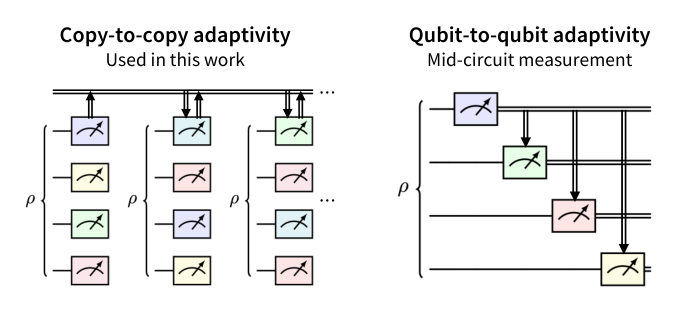
<figcaption class="paper-figure-caption"><b>Fig 1.</b> Figure 1: Two kinds of adaptivity in single-qubit measurements. Our protocol uses copy-to-copy adaptivity, where measurement bases on qubits for each copy of ρ may depend on outcomes from earlier copies, but not on outcomes within the same copy. On the other hand, qubit-to-qubit adap- tivity permits the basis of each qubit to depend on measurement outcomes on other qubits within the same copy. This essentially requires mid-circuit measurement and feed-forward.</figcaption>
</figure>
<figure class="paper-figure-card">
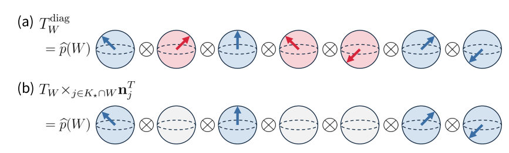
<figcaption class="paper-figure-caption"><b>Fig 2.</b> Figure 2: Overview of Algorithm 1. The red qubits are the ones in the difficult set K⋆, and the blue ones are the remaining qubits. (a) Without the contribution of the off-diagonal entries in [ρ]B, the Pauli moment tensor is a tensor product of single-qubit basis vectors. (b) By contracting the Pauli moment tensor with the basis vectors of difficult qubits, off-diagonal contributions are canceled out and we can extract the basis vectors of the remaining qubits.</figcaption>
</figure>
<figure class="paper-figure-card">
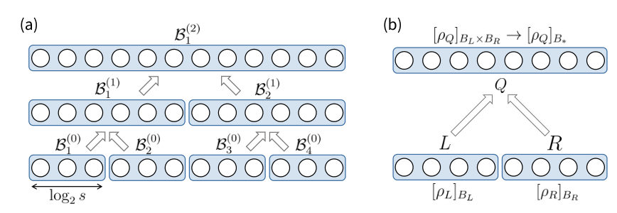
<figcaption class="paper-figure-caption"><b>Fig 3.</b> Figure 3: Overview of Algorithm 2. (a) Tree structure of Algorithm 2: starting from the leaves B(0) j , each parent block is formed by merging two adjacent child blocks. (b) Each child block L and R retains a subspace spanned by at most s basis vectors in BL and BR, respectively. Their tensor product spans at most s2 basis vectors in BL × BR, so selected-entry tomography estimates at most s4 matrix entries. The algorithm then finds a basis B∗and retains at most s basis vectors.</figcaption>
</figure>
<figure class="paper-figure-card">
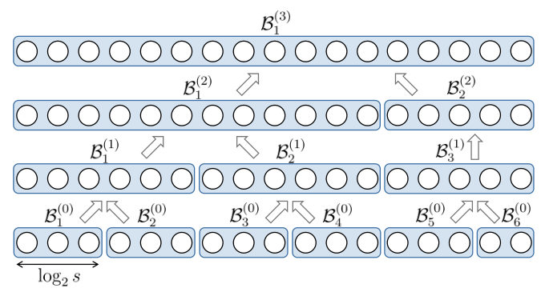
<figcaption class="paper-figure-caption"><b>Fig 4.</b> Figure 4: Example of the tree-merging procedure for n = 17 and m = 3. At level 0, all blocks have size m = 3, except for the last block. At level 2, there is an odd number of blocks, and so the last block is directly passed to level 3.</figcaption>
</figure>
</div>

<p><strong>Summary.</strong> This work presents efficient algorithms to reconstruct quantum states that are sparse in a product basis, even if they possess long-range entanglement. Crucially, the learning process is shown to require only single-qubit measurements, making it compatible with current quantum hardware limitations. The complexity analysis shows polynomial scaling for constant sparsity and quasipolynomial scaling for structured polynomial sparsity.</p>
<p><strong>Why it may be interesting.</strong> The result is highly relevant as it provides a resource-efficient method for quantum state characterization compatible with near-term quantum hardware, which often limits measurements to single-qubit operations.</p>
<details>
<summary>Detailed structure</summary>
<p><strong>Main problem.</strong> The paper addresses the challenge of learning a quantum state that is sparse in a product basis, especially when that state exhibits long-range entanglement.</p>
<p><strong>Main result.</strong> It demonstrates that such sparse states can be efficiently learned using only single-qubit measurements, avoiding the need for entangling gates.</p>
<p><strong>Method.</strong> The approach relies on selected-entry tomography, which estimates individual matrix elements of the density matrix using only single-qubit measurements.</p>
<p><strong>Model / system.</strong> The system involves $n$-qubit quantum states ($
ho$) whose density matrices are assumed to be $s$-sparse in an unknown product basis $B$.</p>
<p><strong>Key observables.</strong> The sparsity $s$ (number of non-zero entries in the density matrix) and the ability to estimate individual matrix elements $[
ho]_B(x, y)$ via single-qubit measurements.</p>
<p><strong>Important parameters / regimes.</strong> Sparsity $s$ (constant vs. polynomial in $n$), the error tolerance $\epsilon$, and the number of qubits $n$.</p>
<p><strong>Assumptions / limitations.</strong> The primary assumption is that the state $
ho$ is $s$-sparse in some product basis $B$. The complexity results depend on whether $B$ is known or structured.</p>
<p><strong>Figures summary.</strong> Figure 1 illustrates two types of adaptivity in single-qubit measurements. Figure 2 provides an overview of Algorithm 1, detailing the use of Pauli moment tensors.</p>
<p><strong>Paper structure.</strong> The paper develops algorithms (Algorithm 1 and Algorithm 2) to learn sparse states. It establishes complexity bounds based on the sparsity $s$ and the knowledge of the product basis $B$, culminating in theorems detailing sample and computational complexity.</p>
</details>
<details>
<summary>Abstract</summary>
<p>We study the problem of learning a sparse quantum state, an $n$-qubit quantum state whose density matrix has at most $s$ nonzero matrix entries in an unknown product basis. While such states admit compact classical descriptions, they can carry long-range entanglement that prevents reconstruction from local reduced density matrices alone. Therefore, previous learning approaches addressed such long-range-entangled states using many entangling gates to extract the necessary information. In this work, we show that sparse states can nevertheless be efficiently learned using only single-qubit measurements. Specifically, when the sparsity $s$ is constant, our algorithm can learn sparse states from single-qubit measurements with polynomial sample complexity and classical computational complexity. When $s$ grows polynomially with $n$, sparse states can still be learned from single-qubit measurements with polynomial sample complexity, although efficient classical computation is not guaranteed in general. In this regime, however, the classical computational complexity becomes quasipolynomial when the state is sparse in an unknown basis that is a product of a known fixed finite set of single-qubit bases (e.g., eigenbases of Pauli operators). These results establish efficient learning of sparse states with long-range entanglement without entangling gates, and the single-qubit measurement requirements make our algorithms compatible with current quantum devices.</p>
</details>
<p><sub><a href="#top">↑ back to top</a></sub></p>

<p><a id="paper-2609.34200"></a></p>
<h3 id="nakayamas-reduction-of-quantum-topos-and-bayesian-quantum-computing"><a href="http://arxiv.org/abs/2609.34200v1">Nakayama's reduction of quantum topos and Bayesian quantum computing</a></h3>
<p><strong>Authors:</strong> Atsuhide Mori<br>
<strong>Type:</strong> theory · <strong>Category:</strong> quantum information and computing · <strong>PDF:</strong> <a href="https://arxiv.org/pdf/2609.34200v1">https://arxiv.org/pdf/2609.34200v1</a><br>
<strong>Analysis basis:</strong> full PDF text, analyzed in chunks
<strong>Topic relevance:</strong> 🔥 <code>quantum measurements</code> <strong>4/5</strong></p>
<div class="figure-strip-hint">↔ Scroll figures horizontally</div>
<div class="paper-figures-scroll">
<figure class="paper-figure-card">
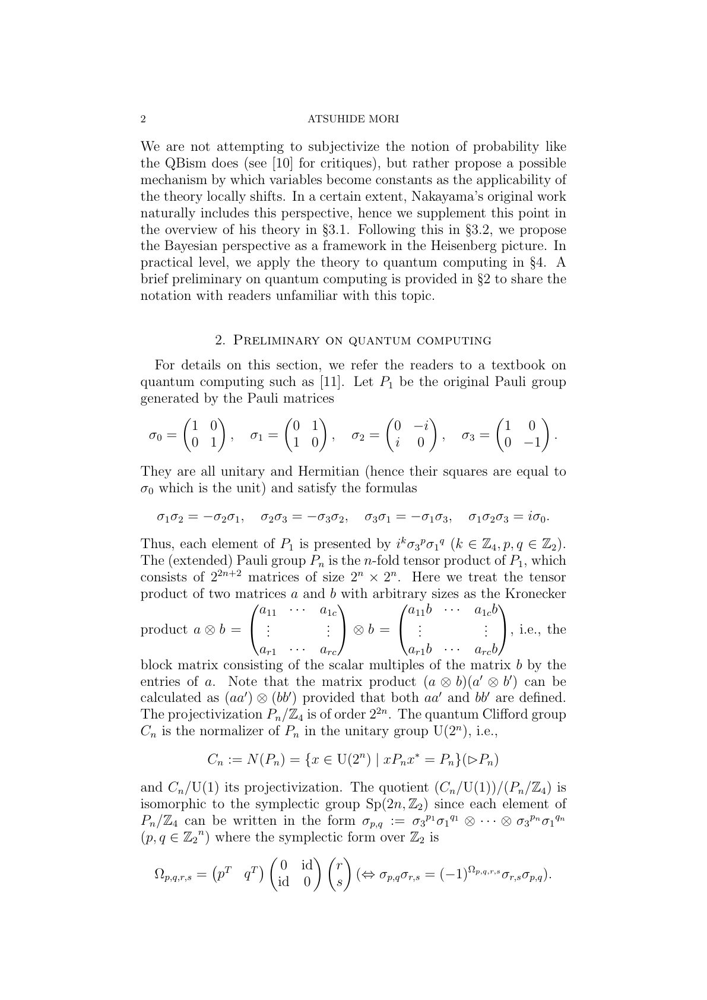
<figcaption class="paper-figure-caption"><b>Fig 1.</b> Low-resolution page preview, page 2</figcaption>
</figure>
<figure class="paper-figure-card">
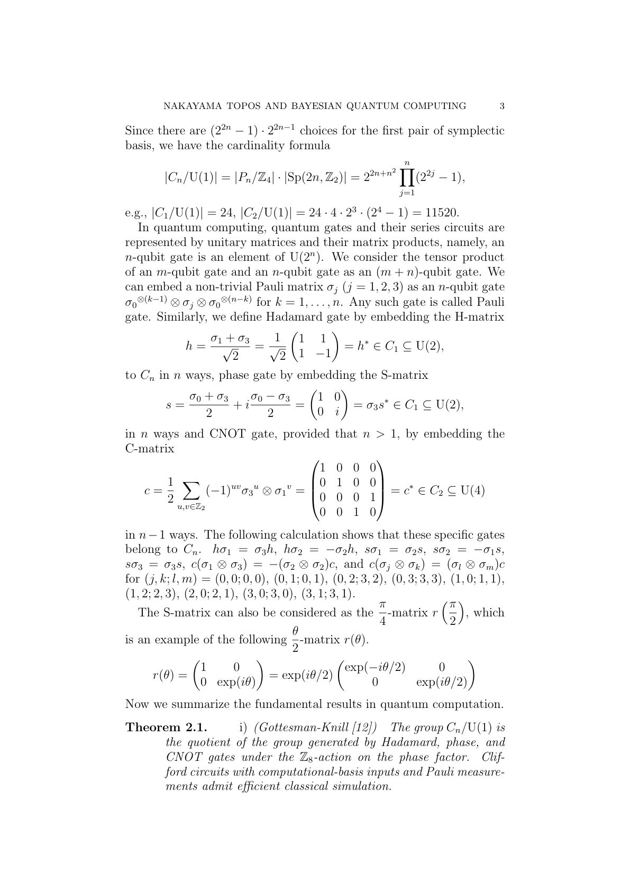
<figcaption class="paper-figure-caption"><b>Fig 2.</b> Low-resolution page preview, page 3</figcaption>
</figure>
<figure class="paper-figure-card">
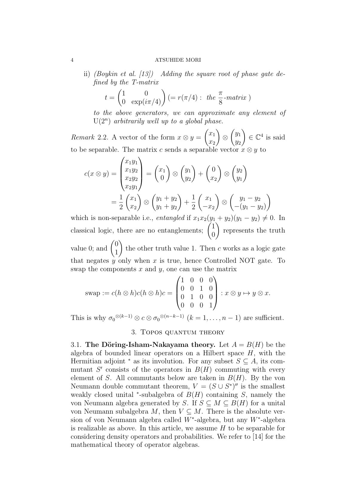
<figcaption class="paper-figure-caption"><b>Fig 3.</b> Low-resolution page preview, page 4</figcaption>
</figure>
<figure class="paper-figure-card">
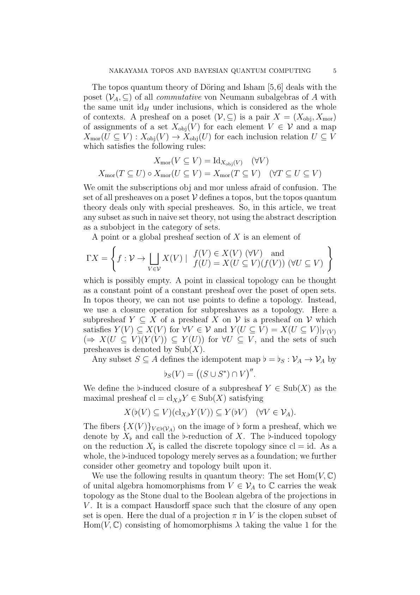
<figcaption class="paper-figure-caption"><b>Fig 4.</b> Low-resolution page preview, page 5</figcaption>
</figure>
<figure class="paper-figure-card">
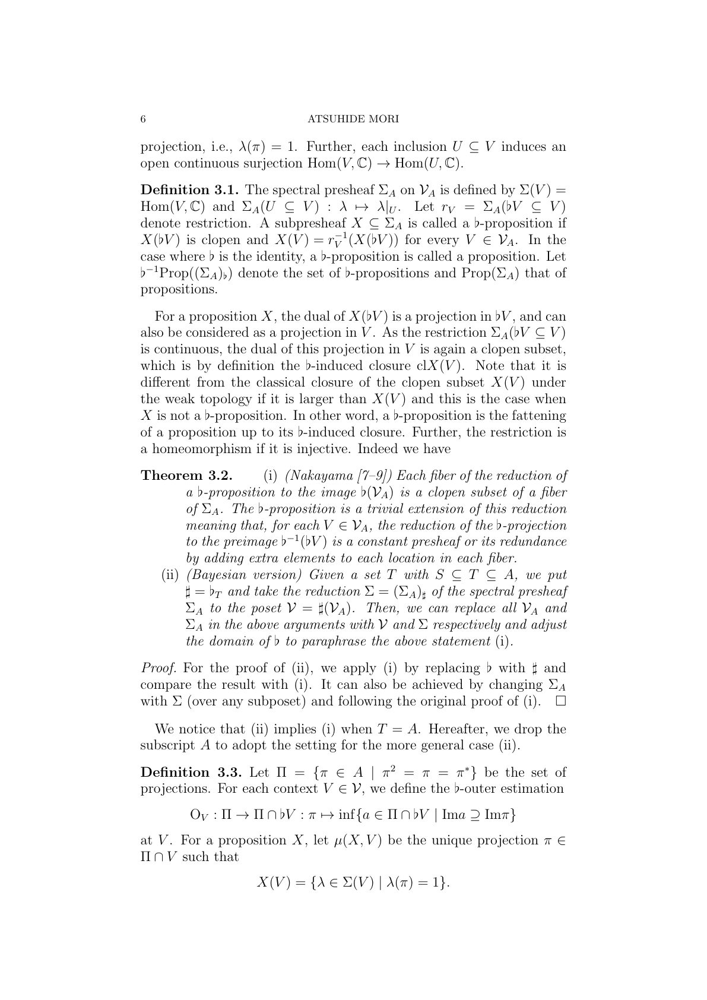
<figcaption class="paper-figure-caption"><b>Fig 5.</b> Low-resolution page preview, page 6</figcaption>
</figure>
</div>

<p><strong>Summary.</strong> This paper develops a highly abstract mathematical framework by merging Nakayama's topos quantum theory with Bayesian probability updating. It models quantum measurement as a structural shift in the theory's logical context, providing a formal mechanism for how prior probabilities update upon observing quantum data. This has implications for understanding the fundamental limits and dynamics of quantum computation.</p>
<p><strong>Why it may be interesting.</strong> While highly abstract, the rigorous mathematical treatment of measurement and contextuality provides a novel, foundational perspective on quantum information processing that moves beyond standard density matrix formalism.</p>
<details>
<summary>Detailed structure</summary>
<p><strong>Main problem.</strong> The paper aims to unify the context limitation in Döring-Isham topos quantum theory with a Bayesian framework, describing how probability updates as quantum data is acquired.</p>
<p><strong>Main result.</strong> The framework formalizes measurement as a local shift in the theory's applicability, leading to the interpretation of posterior probabilities as conditional truth values (0 or 1).</p>
<p><strong>Method.</strong> It employs advanced mathematical tools from topos theory, specifically using $lat$-propositions and $lat$-induced closures, combined with Bayesian updating rules derived from quantum context selection.</p>
<p><strong>Model / system.</strong> The theory models quantum systems using algebras $A$ and contexts $V$ derived from commutative von Neumann subalgebras ($   ext{VA}$). Applications are shown for quantum computing gates (Hadamard, CNOT) acting on qubits.</p>
<p><strong>Key observables.</strong> Contextual probability $\mu_
ho(X, V)$, posterior contextual probability, and the structure of the context poset $\mathcal{P}$.</p>
<p><strong>Important parameters / regimes.</strong> The structure of the unitary group $U(2)$ or $U(4)$, and the specific context $V$ defining the measurement basis.</p>
<p><strong>Assumptions / limitations.</strong> The analysis assumes the system behaves geometrically under the symmetry of the unitary group and that the localization process allows for the interpretation of updates as conditional probabilities.</p>
<p><strong>Figures summary.</strong> Not specified (Notes mention theorems and examples related to 2-qubit gates and probability updates, but no figure descriptions are provided).</p>
<p><strong>Paper structure.</strong> The paper progresses by first establishing the unification of context limitation and probability in the topos framework, then developing the Bayesian updating mechanism via $lat$-propositions, and finally applying this machinery to derive explicit update formulas for quantum computing scenarios.</p>
</details>
<details>
<summary>Abstract</summary>
<p>Nakayama found the way to limit the contexts in the Döring-Isham topos quantum theory and unified such limitation and the definition of probability as a single choice of topology. We explain how this unification supports the Bayesian perspective where the probability changes as data is obtained. We describe this change as a local shift of the applicability of a predictive theory and apply it to quantum computing.</p>
</details>
<p><sub><a href="#top">↑ back to top</a></sub></p>

<p><a id="paper-2609.33275"></a></p>
<h3 id="mobile-impurity-dynamics-in-a-non-hermitian-stark-localised-bath"><a href="http://arxiv.org/abs/2609.33275v1">Mobile-impurity dynamics in a non-Hermitian Stark-localised bath</a></h3>
<p><strong>Authors:</strong> Muhammad S. Hasan, Hsiang-Hua Jen, Jhih-Shih You<br>
<strong>Type:</strong> theory · <strong>Category:</strong> quantum gases · <strong>PDF:</strong> <a href="https://arxiv.org/pdf/2609.33275v1">https://arxiv.org/pdf/2609.33275v1</a><br>
<strong>Analysis basis:</strong> full PDF text, analyzed in chunks
<strong>Topic relevance:</strong> <code>analog quantum simulation</code> <strong>3/5</strong> · <code>correlated / nonlocal dissipation</code> <strong>3/5</strong> · <code>driven-dissipative phase transition</code> <strong>3/5</strong> · <code>methods for driven-dissipative</code> <strong>3/5</strong> · <code>non-equilibrium universality</code> <strong>3/5</strong> · <code>Keldysh / 2PI / non-Gaussian methods</code> <strong>2/5</strong> · <code>quantum measurements</code> <strong>2/5</strong> · <code>scars &amp; prethermalization</code> <strong>2/5</strong> · <code>Frenkel-Kontorova</code> <strong>1/5</strong></p>
<div class="figure-strip-hint">↔ Scroll figures horizontally</div>
<div class="paper-figures-scroll">
<figure class="paper-figure-card">
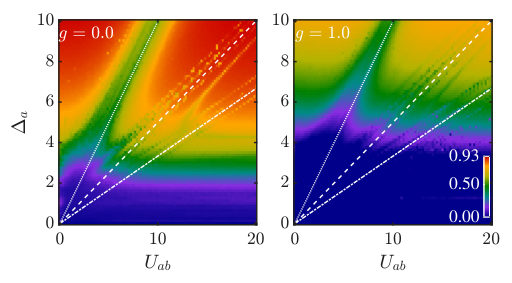
<figcaption class="paper-figure-caption"><b>Fig 1.</b> FIG. 1. Late-time bath imbalance Iavg for the Hermitian case g = 0 (left panel) and the non-Hermitian case g = 1 (right panel) for a chain of L = 10 sites at half filling (Na = L/2 bath bosons), starting from the bath CDW state |1, 0, 1, 0, 1, 0, 1, 0, 1, 0⟩with the impurity initially placed on the bath empty site i0. Reduced-imbalance stripes are visible along Uab ≃β∆a, with the β = 1 line (dotted) most visi- ble and β = 2, 3 lines (dashed and dash-dotted, respectively) weaker. Introducing hopping asymmetry (g = 1, right panel) reduces the im- balance as a consequence of skin effect and modifies the strength of the higher-order resonance stripes while leaving their positions un- changed.</figcaption>
</figure>
<figure class="paper-figure-card">
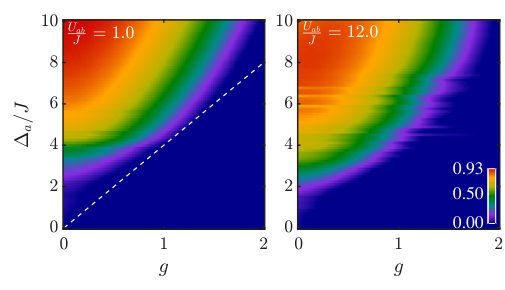
<figcaption class="paper-figure-caption"><b>Fig 2.</b> FIG. 2. Late-time imbalance Iavg as a function of hopping asym- metry g and tilt ∆a/J, for weak impurity-bath interaction Uab/J = 1 (left panel) and strong interaction Uab/J = 12 (right panel), for the half-filled CDW initial state as in Fig. 1. In both panels the upper- left region (small g, large ∆a/J) indicates a robustly Stark-localised bath with Iavg close to unity, while the lower-right region (large g, small ∆a/J) shows that the CDW memory is lost due to the skin effect. The white dashed line shows gc of the Eq. (13) for the non- interacting case. Large interaction between the impurity and the bath (Uab/J = 12.0) additionally shows fine-scale, non-monotonic struc- ture across ∆a/J...</figcaption>
</figure>
<figure class="paper-figure-card">
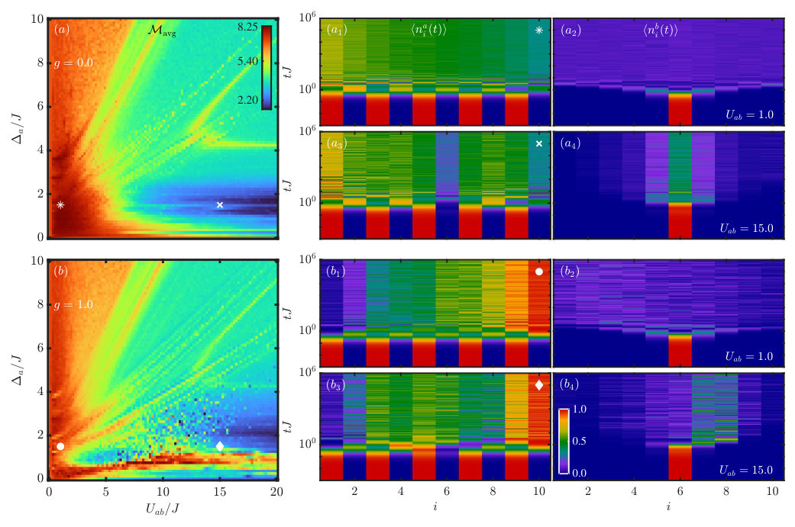
<figcaption class="paper-figure-caption"><b>Fig 3.</b> FIG. 3. Impurity localisation induced by the bath through the effective potential Veff in Eq. (14). Late-time impurity mean-square displacement Mavg as a function of the bath tilt ∆a/J and impurity-bath interaction Uab/J for the Hermitian case g = 0, (a) and the non-Hermitian case g = 1, (b). For g = 0, the strongest localisation occurs around ∆a/J ∼1.5. For g = 1, the skin effect shifts the localisation region towards larger ∆a/J. (a1)–(a4) show time evolution of the bath density ⟨na i (t)⟩and impurity density ⟨nb i (t)⟩at ∆a/J = 1.5 and g = 0. For Uab/J = 1.0 (a1),(a2), the bath loses its initial CDW structure while retaining weak signatures of the Stark potential at late times and the...</figcaption>
</figure>
<figure class="paper-figure-card">
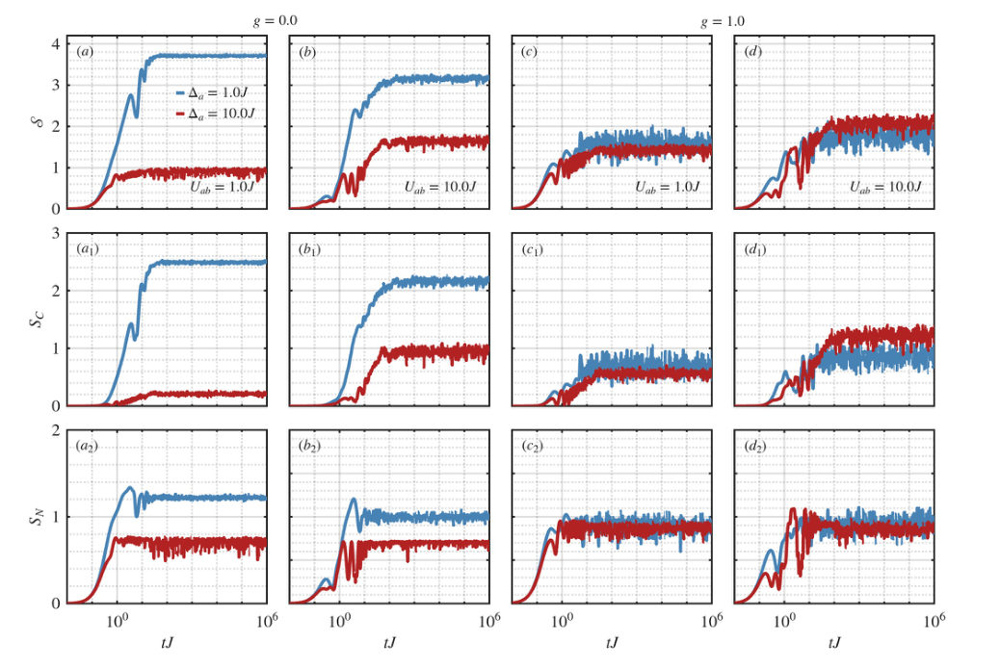
<figcaption class="paper-figure-caption"><b>Fig 4.</b> FIG. 4. Entanglement dynamics for weak coupling Uab/J = 1.0 in the Hermitian case, (a)–(a2), and in the presence of the skin effect, (c)–(c2), and for strong coupling Uab/J = 10.0 in the Hermitian case, (b)–(b2), and with the skin effect, (d)–(d2). The first, second, and third panels in each case show the total entropy S, configurational entropy S C, and particle-number entropy S N, respectively. Blue and red curves correspond to ∆a/J = 1 and ∆a/J = 10.0. At weak coupling, increasing the tilt suppresses the total entropy and changes its dominant contribution from S C to S N, consistent with Stark localisation. The skin effect further suppresses the entropy at weak tilt by reducing the...</figcaption>
</figure>
<figure class="paper-figure-card">
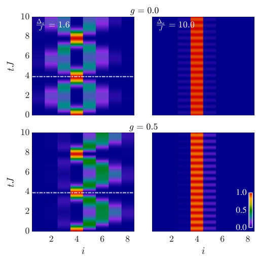
<figcaption class="paper-figure-caption"><b>Fig 5.</b> FIG. 5. Single-particle dynamics in the Stark potential for a chain of L = 8 sites, initially prepared at the central site. Top panels show Hermitian case g = 0. For the smaller tilt ∆a = 1.6J (top left), the particle undergoes Bloch oscillations with period τB = 2π/∆a ≃3.93 (dashed line). For the larger tilt ∆a = 10J (top right), the Stark localisation length ℓS = 2J/∆a becomes much smaller than one lat- tice spacing and the particle density remains nearly stationary. Non- Hermitian case g = 0.5 is shown in the bottom panels. At ∆a = 1.6J (bottom left), the hopping asymmetry biases the oscillatory motion towards the system boundary through the non-Hermitian skin effect. At ∆a = 10J (bottom...</figcaption>
</figure>
</div>

<p><strong>Summary.</strong> This paper analyzes how a mobile impurity interacts with a bath in a non-Hermitian Stark-localised environment. It finds that the non-Hermitian asymmetry alters the bath's memory retention and shifts the conditions under which the impurity itself becomes localized. The results highlight a counterintuitive localization mechanism driven by density fluctuations in the intermediate potential regime.</p>
<p><strong>Why it may be interesting.</strong> This work directly addresses the interplay between non-Hermiticity, external potentials (Stark), and impurity dynamics, which is highly relevant for understanding open quantum systems and engineered quantum matter.</p>
<details>
<summary>Detailed structure</summary>
<p><strong>Main problem.</strong> The study investigates the dynamics of a mobile impurity coupled to a bath subjected to a linear Stark potential and asymmetric hopping in one dimension.</p>
<p><strong>Main result.</strong> The impurity localizes counterintuitively in an intermediate Stark potential regime where the bath's initial-state memory is suppressed, and the non-Hermitian skin effect shifts this localization window toward stronger tilt.</p>
<p><strong>Method.</strong> The analysis uses time evolution simulations, exact diagonalization for small systems, and theoretical derivations involving non-Hermitian spectral decomposition and similarity transformations.</p>
<p><strong>Model / system.</strong> The system consists of a bath of hardcore bosons (species 'a') on an open chain coupled to a single mobile impurity boson (species 'b'). The Hamiltonian includes hopping, a linear Stark potential, and on-site interaction terms.</p>
<p><strong>Key observables.</strong> Bath imbalance ($\langle I_{avg} 
angle$), impurity mean-square displacement ($\langle M_{avg} 
angle$), and entanglement entropy ($S(t)$).</p>
<p><strong>Important parameters / regimes.</strong> Interaction strength ($U_{ab}$), Stark potential tilt ($\Delta_a$), and non-Hermitian hopping asymmetry ($g$).</p>
<p><strong>Assumptions / limitations.</strong> The analysis assumes open boundary conditions (OBC) and models the bath using hardcore bosons mapped to non-interacting fermions.</p>
<p><strong>Figures summary.</strong> Figures illustrate the average late-time bath imbalance ($\langle I_{avg} 
angle$) versus interaction/tilt strengths for both Hermitian and non-Hermitian cases, and show the impurity mean-square displacement ($\langle M_{avg} 
angle$).</p>
<p><strong>Paper structure.</strong> The paper first establishes the model and key diagnostics, then analyzes how the non-Hermitian asymmetry affects bath memory via resonances, and finally determines the conditions for impurity localization, showing the shift due to the skin effect.</p>
</details>
<details>
<summary>Abstract</summary>
<p>We investigate the dynamics of a clean mobile impurity coupled to a bath subjected to a linear Stark potential as well as asymmetric hopping in one dimension. The impurity mediates resonant tunnelling in the bath whenever the interaction strength matches the Stark potential and leads to loss in the memory of the initial state of the bath particles. The non-Hermitian asymmetry does not shift these resonances but reshapes them directionally, and it destroys the bath's Stark-induced memory through the non-Hermitian skin effect. On the other hand, we find that the impurity is localised only within an intermediate range of Stark potential. At very weak tilt strengths the bath offers no potential to trap the impurity, while at strong tilt the bath freezes into a nearly periodic charge density wave that pushes the impurity towards partial localisation. Counterintuitively, the impurity localises in the intermediate regime where the bath's initial-state memory is strongly suppressed, yet a spatially inhomogeneous density profile persists. The interaction amplifies these density fluctuations, dressing the impurity with an effective disordered potential that traps it. Since the skin effect degrades this intermediate density distribution, the impurity localisation window shifts toward stronger tilt in the non-Hermitian regime.</p>
</details>
<p><sub><a href="#top">↑ back to top</a></sub></p>

<p><a id="paper-2609.32580"></a></p>
<h3 id="stable-long-range-charging-and-boundary-mediated-thresholds-in-a-waveguide-quantum-battery"><a href="http://arxiv.org/abs/2609.32580v1">Stable Long-Range Charging and Boundary-Mediated Thresholds in a Waveguide Quantum Battery</a></h3>
<p><strong>Authors:</strong> Li-Hong Yu, Zhuo-Yu Zhang, Yu Wang, Xin Li<br>
<strong>Type:</strong> theory · <strong>Category:</strong> other · <strong>PDF:</strong> <a href="https://arxiv.org/pdf/2609.32580v1">https://arxiv.org/pdf/2609.32580v1</a><br>
<strong>Analysis basis:</strong> full PDF text, analyzed in chunks
<strong>Topic relevance:</strong> <code>Tavis-Cummings &amp; cavity-many-emitter</code> <strong>3/5</strong> · <code>analog quantum simulation</code> <strong>3/5</strong> · <code>correlated / nonlocal dissipation</code> <strong>3/5</strong> · <code>driven-dissipative phase transition</code> <strong>3/5</strong> · <code>methods for driven-dissipative</code> <strong>3/5</strong> · <code>Keldysh / 2PI / non-Gaussian methods</code> <strong>2/5</strong> · <code>non-equilibrium universality</code> <strong>2/5</strong> · <code>interference shaping light</code> <strong>1/5</strong> · <code>quantum measurements</code> <strong>1/5</strong></p>
<div class="figure-strip-hint">↔ Scroll figures horizontally</div>
<div class="paper-figures-scroll">
<figure class="paper-figure-card">
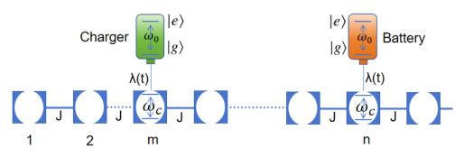
<figcaption class="paper-figure-caption"><b>Fig 1.</b> FIG. 1. Schematic of the charging scheme. The QC and QB are coupled through a 1D semi-infinite CRW, where 𝑚and 𝑛refer to their respective positions. The time-dependent interaction strength is given by 𝜆(𝑡) = 𝜆Θ(𝜏−𝑡), with the step function Θ satisfying Θ = 1 for 𝑡∈[0,𝜏] and Θ = 0 otherwise.</figcaption>
</figure>
<figure class="paper-figure-card">
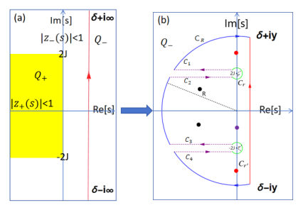
<figcaption class="paper-figure-caption"><b>Fig 2.</b> FIG. 2. Complex 𝑠-plane partition and contour deformation. (a) The complex plane is divided into two analytic domains: 𝑄+ (yellow, |𝑧+(𝑠)| &lt; 1) and 𝑄−(white, |𝑧−(𝑠)| &lt; 1), as defined in Eq. (15). The Bromwich contour (red line) runs from 𝛿−𝑖∞to 𝛿+ 𝑖∞and lies entirely within 𝑄−. (b) Upon analytic continuation of 𝑄−to the full complex plane, the integral is evaluated by contour deformation. Black dots denote unstable poles; red and purple dots indicate bound states outside and within the band, respectively.</figcaption>
</figure>
<figure class="paper-figure-card">
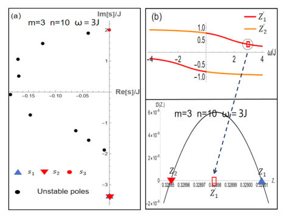
<figcaption class="paper-figure-caption"><b>Fig 3.</b> FIG. 3. (a) Pole distribution in the complex 𝑠-plane for 𝑚= 3, 𝑛= 10, 𝜆= 𝐽, and 𝜔= 3𝐽. Stable poles 𝑠1, 𝑠2, and 𝑠3 are marked by a blue triangle, a red inverted triangle, and a red dot, respectively; black circles denote unstable poles. Among these, 𝑠1 and 𝑠2 located on the same side of the energy band, dominate the charging kinetics. (b) Upper panel: Real roots 𝑍 ′ 1 (red curve) and 𝑍 ′ 2 (orange curve) of ℎ0(𝜆= 𝐽, 𝑍−) = 0 as functions of 𝜔. Lower panel: At 𝜔= 3𝐽, the real roots 𝑍1 and 𝑍2 of D(𝜆= 𝐽, 𝑍−) = 0 closely approximate 𝑍 ′ 1.</figcaption>
</figure>
<figure class="paper-figure-card">
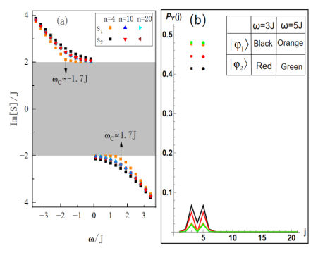
<figcaption class="paper-figure-caption"><b>Fig 4.</b> FIG. 4. (a) The purely imaginary bound-state singularities 𝑠1 and 𝑠2 plotted as functions of the detuning 𝜔for 𝜆= 𝐽and 𝑚= 3. As |𝜔| increases, 𝑠1 and 𝑠2 approach each other. The shaded region denotes the continuous band. Once 𝜔crosses the critical value 𝜔𝐶≃ ±1.7𝐽, 𝑠1 attaches to the continuum, breaking the two-bound-state interference and suppressing the charging capacity for smaller 𝑚and 𝑛. (b) Normalized spatial profiles 𝑃𝑌( 𝑗) of bound eigenstates |𝜑1⟩ (black/orange) and |𝜑2⟩(red/green) under 𝜔= 3𝐽and 5𝐽. 𝑃𝐶( 𝑗) (dot), 𝑃𝐵( 𝑗) (dot) and 𝑃𝑊( 𝑗) (curve) represent the populations of the QC, QB, and resonator at the 𝑗-th site, respectively. Other parameters: 𝜆= 𝐽, 𝑚= 3, 𝑛= 5.</figcaption>
</figure>
<figure class="paper-figure-card">
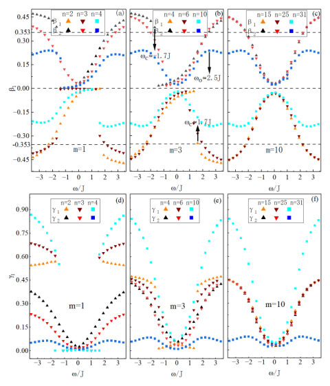
<figcaption class="paper-figure-caption"><b>Fig 5.</b> FIG. 5. Upper panels (a)–(c): 𝛽𝑙as functions of the detuning 𝜔for 𝑚=1, 3, and 10, respectively. Lower panels (d)–(f): the corresponding 𝛾𝑙at the same values of 𝑚. Color-coded symbols distinguish different site indices 𝑛, with 𝛽1,2 and 𝛾1,2 defined in the legends. Panel (b) highlights the critical detuning |𝜔𝐶| ≃1.7𝐽and the optimal detuning 𝜔𝑂≃2.5𝐽. Effective charging is achieved when 𝛽2 −𝛽1 &gt; 0.706.</figcaption>
</figure>
</div>

<p><strong>Summary.</strong> This theoretical study analyzes energy storage and transfer in a quantum battery coupled to a waveguide. By solving the system dynamics using complex analysis techniques, the authors determine the conditions necessary for efficient, long-range charging. The results provide crucial guidelines for designing solid-state quantum energy storage devices.</p>
<p><strong>Why it may be interesting.</strong> This work directly addresses open quantum systems dynamics, specifically energy transfer and coherent coupling in engineered photonic structures, which is central to modern quantum optics and cavity QED.</p>
<details>
<summary>Detailed structure</summary>
<p><strong>Main problem.</strong> The paper investigates the feasibility and mechanisms for achieving stable, long-range energy charging in a quantum battery setup mediated by a waveguide.</p>
<p><strong>Main result.</strong> Near-unity charging efficiency is possible under specific geometric constraints ($n < 3m$), and the average charging power decays exponentially with the spatial separation between the charger and battery.</p>
<p><strong>Method.</strong> The dynamics are solved by deriving coupled integro-differential equations, transforming them using the Laplace transform, and analyzing the residues of the resulting complex integrals.</p>
<p><strong>Model / system.</strong> The system models two emitters (Quantum Charger and Quantum Battery) coupled to a semi-infinite 1D Coupled-Resonator Waveguide (CRW) terminated by a mirror. The Hamiltonian includes terms for the emitters, the waveguide, and their respective couplings.</p>
<p><strong>Key observables.</strong> Instantaneous stored energy of the QB, average charging power, and the time-dependent amplitudes of the coupled emitters.</p>
<p><strong>Important parameters / regimes.</strong> Detuning ($\omega$), coupling strength ($\lambda$), and the spatial separations ($m$ and $n$) between the emitters and the boundary.</p>
<p><strong>Assumptions / limitations.</strong> The analysis assumes the CRW has open boundary conditions, and the long-time dynamics are governed by the poles (bound states) in the complex frequency plane.</p>
<p><strong>Figures summary.</strong> Figures illustrate the schematic setup (QC, QB, CRW) and show the time evolution of the stored energy $E_B(t)$ under varying coupling strengths and detunings.</p>
<p><strong>Paper structure.</strong> The paper proceeds by defining the Hamiltonian and system dynamics, deriving the governing equations, solving them using Laplace transforms and contour integration techniques, and finally analyzing the long-time behavior dictated by the poles (bound states) to determine optimal charging regimes.</p>
</details>
<details>
<summary>Abstract</summary>
<p>The waveguide-integrated architecture holds promise for scalable on-chip integration of a charger, a transmission channel, and a quantum battery in a modular, independently optimizable design. We investigate a minimal charging configuration consisting of two emitters coupled to a semi-infinite waveguide and identify the optimal charging mechanism, wherein non-Markovian dynamics driven by out-of-band bound states give rise to single-frequency oscillations of the stored energy. We show that near-unity charging efficiency is achievable at weak to moderate coupling strengths via detuning control, provided that the battery-to-boundary separation $n$ is less than three times the charger-to-boundary separation $m$ ($n<3m$)---a constraint imposed by the mirror-induced feedback---while the average charging power decays exponentially with the spatial separation $n-m$. These findings offer useful insights for monolithic solid-state quantum energy storage and transport.</p>
</details>
<p><sub><a href="#top">↑ back to top</a></sub></p>

<p><a id="paper-2609.34365"></a></p>
<h3 id="cavity-magnonics-and-bound-states-in-the-continuum-with-bragg-and-anti-bragg-mirrors"><a href="http://arxiv.org/abs/2609.34365v1">Cavity magnonics and bound states in the continuum with Bragg and anti-Bragg mirrors</a></h3>
<p><strong>Authors:</strong> B. -Y. Wu, K. -P. Li, G. Chen, W. -M. Zhou, C. -X. Run, K. -M. Hsieh, A. F. Kockum, Z. -R. Lin, W. Nie, I. -C. Hoi<br>
<strong>Type:</strong> experiment · <strong>Category:</strong> other · <strong>PDF:</strong> <a href="https://arxiv.org/pdf/2609.34365v1">https://arxiv.org/pdf/2609.34365v1</a><br>
<strong>Analysis basis:</strong> full PDF text, analyzed in chunks
<strong>Topic relevance:</strong> <code>analog quantum simulation</code> <strong>3/5</strong> · <code>correlated / nonlocal dissipation</code> <strong>3/5</strong> · <code>driven-dissipative phase transition</code> <strong>3/5</strong> · <code>Tavis-Cummings &amp; cavity-many-emitter</code> <strong>2/5</strong> · <code>interference shaping light</code> <strong>2/5</strong> · <code>methods for driven-dissipative</code> <strong>2/5</strong> · <code>non-equilibrium universality</code> <strong>2/5</strong> · <code>quantum optics experiment</code> <strong>2/5</strong> · <code>Keldysh / 2PI / non-Gaussian methods</code> <strong>1/5</strong></p>
<div class="figure-strip-hint">↔ Scroll figures horizontally</div>
<div class="paper-figures-scroll">
<figure class="paper-figure-card">
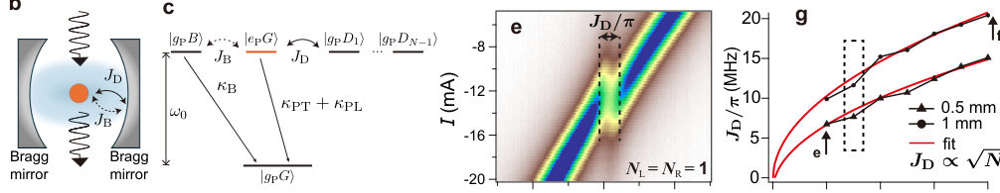
<figcaption class="paper-figure-caption"><b>Fig 1.</b> Figure 1. Bragg cavity and the interaction with a probe magnon (PM). (a) Schematic illustration of the dual-waveguide setup with N mirror YIG spheres (diameter 1.2 mm, black spheres) and a moveable probe YIG sphere (orange) on the transverse waveguide, and the longitudinal waveguide positioned above the probe sphere. The drawn spheres are enlarged relative to the resonance wavelength λ0 for clarity. Here d1 = λ0/2 denotes the spacing between adjacent YIG spheres, d2 denotes the spacing between the probe sphere and the left mirror sphere, and d0 denotes the cavity region. A local external magnetic field (not shown) is applied to each sphere to tune its magnon resonance frequency ω0. See...</figcaption>
</figure>
<figure class="paper-figure-card">
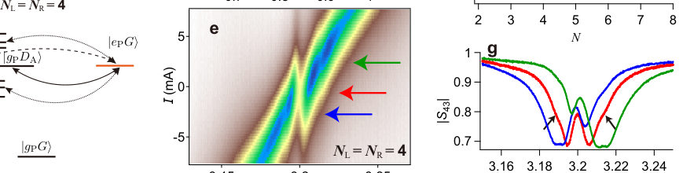
<figcaption class="paper-figure-caption"><b>Fig 2.</b> Figure 2. Anti-Bragg cavity QED. Here, we consider d1 = 3λ0/4, d0 = 3λ0/2 and use a probe YIG sphere with a diameter of 1.2 mm. (a) The energy-level diagram of four supermodes formed in an anti-Bragg cavity with NL = NR = 2. The PM |eP⟩couples dissipatively and coherently to two degenerate bright and dark supermodes, respectively. (b) Measured |S43| as a function of I and ωp with four MMs set to ω0/2π ≈3.2 GHz. (c) Representative line cut from (b), compared with the resonance case NL = NR = 1. (d) Same as (a), but for NL = NR = 4, showing the PM interacting with a denser set of collective supermodes. The dashed and solid arrows indicate both dissipative and coherent couplings. (e) Measured...</figcaption>
</figure>
<figure class="paper-figure-card">
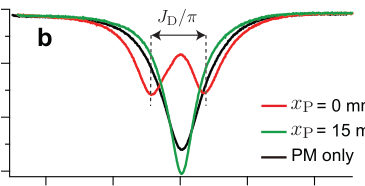
<figcaption class="paper-figure-caption"><b>Fig 3.</b> Figure 3. Field distribution of the BIC |D1⟩in a Bragg cav- ity and transmission spectra of the PM. (a) Rescaled optical field |eϕ(x)| of the BIC in the Bragg cavity with N = 4 mirror YIG spheres (d1 = 3λ0/2). Here, |eϕ(x)| denotes the pho- tonic spatial profile |ϕ(x)| normalized to its maximum value. The dashed regions indicate the experimental measurements in Fig. 4(c). (b) Measured |S43| for a 1.0 mm probe YIG sphere [lightly shaded in (a)] at two positions: xP = 0 mm (red curve, coherent coupling JD with the BIC |D1⟩) and xP = 15 mm [green curve, dissipative coupling JB with the bright supermode, as shown in Fig. 1(c)]. The black curve is a reference with far-detuned MMs.</figcaption>
</figure>
<figure class="paper-figure-card">
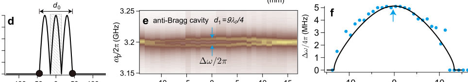
<figcaption class="paper-figure-caption"><b>Fig 4.</b> Figure 4. Probe-position field detection in Bragg and anti-Bragg cavities. (a, b) Measured |S43| spectra with the PM tuned into resonance with the Bragg MMs (NL = NR = 2, d1 = 3λ0/2) at 3.2 GHz [Fig. 3(a)], recorded for a series of probe YIG sphere (1.0 mm) displacements, xP. (c) Coupling strength JD between the PM and the Bragg cavity extracted from panels (a, b), as a function of xP. The bold black spheres indicate the locations of mirror spheres. (d) Rescaled optical field |eϕ(x)| of the single anti-Bragg BIC [zoom in of Supplementary Fig. S2(a)], which is confined within the cavity region d0 (−45 mm &lt; x &lt; 45 mm) for NL = NR = 2 and d1 = 9λ0/4. The dashed region indicates where the field...</figcaption>
</figure>
</div>

<p><strong>Summary.</strong> This paper reports experimental realization of magnonic cavities using periodic arrays of ferrimagnetic spheres acting as Bragg and anti-Bragg mirrors. By measuring waveguide transmission, the authors demonstrate distinct coupling regimes in these two types of cavities. The work highlights the utility of these systems for studying BICs and developing flexible platforms for quantum light-matter interactions.</p>
<p><strong>Why it may be interesting.</strong> This work is highly relevant to AMO physics as it uses magnonics (a solid-state analogue to photonics) to explore fundamental concepts like BICs and strong light-matter coupling, mirroring techniques used in cavity QED with atoms.</p>
<details>
<summary>Detailed structure</summary>
<p><strong>Main problem.</strong> The paper aims to experimentally demonstrate and study Bound States in the Continuum (BICs) within the context of cavity magnonics using engineered magnetic mirrors.</p>
<p><strong>Main result.</strong> The authors successfully realized both Bragg and anti-Bragg cavities, showing that the anti-Bragg cavity exhibits a distinct magnon-cavity interaction, including the observation of dissipative coupling signatures.</p>
<p><strong>Method.</strong> The study uses a dual-open-waveguide architecture with periodic arrays of ferrimagnetic-sphere magnonic mirrors and employs waveguide transmission spectroscopy, supplemented by scanning the probe position.</p>
<p><strong>Model / system.</strong> The system involves magnons in YIG sphere arrays acting as mirrors, coupled to a probe magnon and a transverse waveguide. The physics is modeled using an effective non-Hermitian Hamiltonian describing coherent and dissipative magnon interactions.</p>
<p><strong>Key observables.</strong> Waveguide transmission spectra (|S21|, |S43|), polariton splitting, and the depth of transmission dips as a function of mirror arrangement (Bragg vs. anti-Bragg).</p>
<p><strong>Important parameters / regimes.</strong> Mirror spacing (Bragg: $n\lambda_0/2$; Anti-Bragg: $3\lambda_0/4$), probe sphere size, and the number of mirror spheres ($N$).</p>
<p><strong>Assumptions / limitations.</strong> The deepening of transmission dips in the anti-Bragg cavity is interpreted as evidence of dissipative coupling, rather than simple geometrical interference.</p>
<p><strong>Figures summary.</strong> Figures illustrate the schematic setup, energy level diagrams for supermodes, and measured transmission spectra comparing Bragg and anti-Bragg cavity responses.</p>
<p><strong>Paper structure.</strong> The paper builds from the theoretical description of the effective Hamiltonian, details the experimental realization of Bragg and anti-Bragg cavities, presents spectroscopic measurements to characterize supermodes and BIC signatures, and concludes by discussing the implications for flexible quantum interfacing.</p>
</details>
<details>
<summary>Abstract</summary>
<p>A periodic resonant emitter array coupled to a one-dimensional waveguide can act as a mirror. A typical example is a Bragg mirror, where emitters are spaced by multiples of half wavelengths and collectively enhance light reflection. Two such mirrors form an effective cavity that hosts bound states in the continuum (BICs). However, generating and detecting the spatial profiles of such BICs has proven challenging. Here, we experimentally demonstrate BICs in cavity magnonics using two periodic ferrimagnetic-sphere arrays and a probe sphere in a dual-open-waveguide architecture. We realize both Bragg and anti-Bragg cavities, whose mirrors have different lattice constants. In the Bragg cavity, there are degenerate supermodes formed by mirror spheres. We show that a single dark supermode coherently couples to the probe magnon in the cavity region, forming two polaritons whose splitting scales with both the probe-sphere size and the number of mirror spheres. By contrast, the anti-Bragg cavity has bright and dark supermodes in a bandgap, substantially changing the magnon-cavity interaction. Moreover, by moving the probe sphere, we perform position-dependent detection of the cavity field, highlighting the role of BICs in these cavities. Our flexible experimental setup with a scanning probe opens possibilities to detect other exotic states created by light-matter interaction, to interface with superconducting circuits in hybrid quantum networks, and to study non-Hermitian physics with Bragg and anti-Bragg cavities.</p>
</details>
<p><sub><a href="#top">↑ back to top</a></sub></p>

<p><a id="paper-2609.33837"></a></p>
<h3 id="dynamic-sculpting-of-photon-statistics-in-a-raman-coupled-cavity-qed-system"><a href="http://arxiv.org/abs/2609.33837v1">Dynamic Sculpting of Photon Statistics in a Raman-Coupled Cavity QED System</a></h3>
<p><strong>Authors:</strong> Amir Rahmani, Alireza Dehghani<br>
<strong>Type:</strong> theory · <strong>Category:</strong> other · <strong>PDF:</strong> <a href="https://arxiv.org/pdf/2609.33837v1">https://arxiv.org/pdf/2609.33837v1</a><br>
<strong>Analysis basis:</strong> full PDF text, analyzed in chunks
<strong>Topic relevance:</strong> <code>analog quantum simulation</code> <strong>3/5</strong> · <code>interference shaping light</code> <strong>3/5</strong> · <code>methods for driven-dissipative</code> <strong>3/5</strong> · <code>Tavis-Cummings &amp; cavity-many-emitter</code> <strong>2/5</strong> · <code>driven-dissipative phase transition</code> <strong>2/5</strong> · <code>Full counting statistics</code> <strong>1/5</strong> · <code>Keldysh / 2PI / non-Gaussian methods</code> <strong>1/5</strong> · <code>correlated / nonlocal dissipation</code> <strong>1/5</strong> · <code>quantum measurements</code> <strong>1/5</strong> · <code>quantum optics experiment</code> <strong>1/5</strong></p>
<div class="figure-strip-hint">↔ Scroll figures horizontally</div>
<div class="paper-figures-scroll">
<figure class="paper-figure-card">
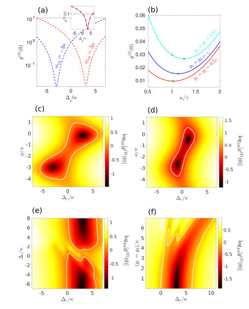
<figcaption class="paper-figure-caption"><b>Fig 1.</b> FIG. 2. (a): Second-order correlation function g(2)(0) versus detuning ∆c/κ for two different detuning ωeg. We assume Λ and ϕ set to the condition in Eq. (7) for ∆c = ωeg = ±3. Other parameters are Ω= 0.1κ, g1 = g2 = κ, γe = γg = 0.4κ, ∆i = 20κ, ωeg = 3κ. The inset shows the agreement between the numerical (blue-solid line) and analytical (red- dashed line) results for weak drives. (b): The variation of g(2)(0) versus cavity decay rate. The parametric drive is set from Eq. (7) with κ = γ (the green dots). The star shows the the minima. (c): Density plot of log10[g(2)(0)] versus ∆c/κ and ϕ/π for fixed Λ = 0.0032κ. Other parameters are the same as panel a. (d): Same as (b) but with Λ =...</figcaption>
</figure>
<figure class="paper-figure-card">
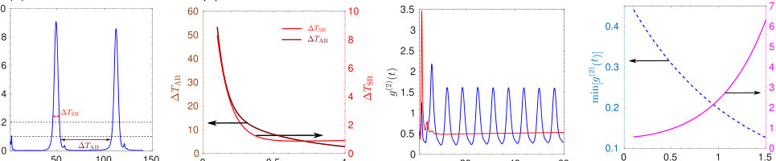
<figcaption class="paper-figure-caption"><b>Fig 2.</b> FIG. 3. Time evolution and parametric dependence of the second-order correlation function. (a): g(2)(t) versus normalized time tκ for sinusoidal modulation of ∆i. Two time windows are indicated; ∆TAB(∆TSB) show the time window that light is antibunched (super-bunched))in a single repetition. We assume ∆i is modulated as ∆i + Ai sin(fit). Using parameters are: ∆c = ωeg = 3κ, g1 = g2 = κ, Ω= 0.1κ, Λ = 0.0035κ, ϕ = −0.1, γe = γg = 0.4κ, Ai = ∆i = 6.5κ and fi = 0.1/κ. (b): The two time windows ∆TAB and ∆TSB vary exponentially with the modulation frequency fi. (c): Periodic modulation of g(2)(t) using a different set of parameters. The steady-state result is shown in red for reference. Using...</figcaption>
</figure>
<figure class="paper-figure-card">
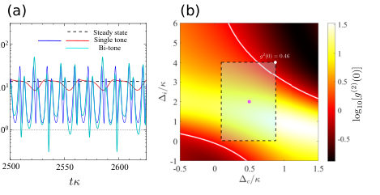
<figcaption class="paper-figure-caption"><b>Fig 3.</b> FIG. 4. (a): Long-time (Floquet) regime of g(2)(t) for sin- gle tone and bi-tone modulation of ∆i and ∆c. The steady- state regime (shown by the dashed line) is in the super- bunching regime (g(2)(0) = 13.4). We assume ∆i(t) = 2 + 2 sin(0.5t) (the associated g(2)(t) shown in red) and ∆c(t) = 0.5 + 0.4 sin(0.2t) (the associated g(2)(t) shown in blue). The cyan curve shows g(2)(t) when both ∆i and ∆c are modulated. (b) The density plot of g(2)(0) in terms of ∆i/κ and ∆c/κ. The magenta point shows the center of modulation: (∆c = 0.5, ∆i = 2)κ. The rectangle shows the sweeping area where g(2)(t) sweeps in the bi-tone modula- tion. The white point at the upper-right corner shows the minimum...</figcaption>
</figure>
<figure class="paper-figure-card">

<figcaption class="paper-figure-caption"><b>Fig 4.</b> FIG. 5. Second-order correlation function in terms of delay τ. Solid lines shows numerical solution of the master equation. Dashed lines shows the analytical result based on Eq. (B3) Using parameters: g1 = g2 = 1κ, Ω= 0.05κ, ωeg = 3κ, γg = γe = 0.4κ, ∆i = 20κ.</figcaption>
</figure>
</div>

<p><strong>Summary.</strong> This paper proposes a method to dynamically control photon statistics in a Raman-coupled cavity QED system by time-modulating the system's detunings. By exploiting quantum interference, the authors show they can actively switch between photon bunching and antibunching regimes. This offers a powerful, time-gated mechanism for generating nonclassical light sources.</p>
<p><strong>Why it may be interesting.</strong> This work is highly relevant to AMO physics and quantum optics as it provides a concrete, tunable platform (cavity QED) to engineer nonclassical light sources dynamically, which is a major focus area in the field.</p>
<details>
<summary>Detailed structure</summary>
<p><strong>Main problem.</strong> The primary goal is to dynamically control photon statistics, moving beyond static measurements, by actively manipulating the system's quantum correlations between bunching and antibunching regimes.</p>
<p><strong>Main result.</strong> The authors demonstrate a versatile mechanism using time-modulated detunings in a Raman-coupled cavity QED system to achieve time-gated photon antibunching, which cannot be achieved under static conditions.</p>
<p><strong>Method.</strong> The analysis relies on solving the Lindblad master equation and deriving effective Hamiltonians, utilizing quantum interference principles to predict correlation functions.</p>
<p><strong>Model / system.</strong> The system is a Raman-coupled cavity-atom setup incorporating parametric amplification, modeled by a three-level atom coupled to a cavity mode and driven by external fields.</p>
<p><strong>Key observables.</strong> The second-order correlation function, g^(2)(τ), which characterizes photon statistics (antibunching if g^(2)(0) &lt; 1, bunching if g^(2)(0) &gt; 1).</p>
<p><strong>Important parameters / regimes.</strong> Detunings ($\Delta_i, \Delta_c$), coupling strengths ($g_R, \Omega, \Lambda$), and the modulation frequency determining the time-gating rate.</p>
<p><strong>Assumptions / limitations.</strong> The analysis often employs the weak-driving regime and utilizes approximations to derive effective Hamiltonians by eliminating the excited state.</p>
<p><strong>Figures summary.</strong> Figures illustrate the schematic of the driven system, the quantum interference pathways for two-photon excitation, and numerical results showing antibunching dips as a function of detuning and decay rates.</p>
<p><strong>Paper structure.</strong> The paper progresses from establishing the physical model (Hamiltonian/Master Equation) to deriving analytical conditions for quantum control, and finally demonstrating dynamic control over photon correlations via time modulation.</p>
</details>
<details>
<summary>Abstract</summary>
<p>Controlling photon statistics is pivotal to many applications in classical and quantum photonics. While steady-state photon statistics have been widely studied, dynamically manipulating these statistical properties in time remains elusive. Herein, we propose a scheme to actively control photon statistics between bunching and antibunching regimes through quantum interference. Our approach relies on a Raman-coupled cavity-atom system with parametric amplification, where time modulating the detuning of the intermediate state allows us to either deepen the photon blockade or enhance photon bunching. Simultaneous modulation of the cavity and intermediate-state detunings produces antibunching that cannot be achieved under static conditions or by modulating either detuning alone. Because the modulation is periodic, the antibunching reappears at regular time intervals, enabling time-gated photon antibunching under continuous-wave operation at a repetition rate determined by the modulation frequency. These results show a versatile mechanism based on Raman-assisted quantum interference for dynamically engineering photon correlations.</p>
</details>
<p><sub><a href="#top">↑ back to top</a></sub></p>

<p><a id="paper-2609.34416"></a></p>
<h3 id="excitation-gap-of-a-confined-chiral-mode-measures-critical-zero-point-fluctuations"><a href="http://arxiv.org/abs/2609.34416v1">Excitation Gap of a Confined Chiral Mode Measures Critical Zero-Point Fluctuations</a></h3>
<p><strong>Authors:</strong> Shu He, Liwei Duan<br>
<strong>Type:</strong> theory · <strong>Category:</strong> other · <strong>PDF:</strong> <a href="https://arxiv.org/pdf/2609.34416v1">https://arxiv.org/pdf/2609.34416v1</a><br>
<strong>Analysis basis:</strong> full PDF text, analyzed in chunks
<strong>Topic relevance:</strong> <code>Dicke superradiance</code> <strong>3/5</strong> · <code>Tavis-Cummings &amp; cavity-many-emitter</code> <strong>3/5</strong> · <code>analog quantum simulation</code> <strong>3/5</strong> · <code>superradiant laser</code> <strong>3/5</strong> · <code>driven-dissipative phase transition</code> <strong>2/5</strong> · <code>Keldysh / 2PI / non-Gaussian methods</code> <strong>1/5</strong> · <code>correlated / nonlocal dissipation</code> <strong>1/5</strong> · <code>methods for driven-dissipative</code> <strong>1/5</strong> · <code>non-equilibrium universality</code> <strong>1/5</strong></p>
<div class="figure-strip-hint">↔ Scroll figures horizontally</div>
<div class="paper-figures-scroll">
<figure class="paper-figure-card">

<figcaption class="paper-figure-caption"><b>Fig 1.</b> FIG. 1. A chiral excitation probes another branch’s zero-point fluctuations. (a) Normal-state boundaries at j = 0.6; stars mark their intersections and the inset shows the ring. (b) A confined chiral ladder acquires a splitting from the uniform variance (left, leading-order schematic); the quartic-oscillator ground-state density and its y2-weighted density show the fluctuation integral (right). (c) Normalized gap–variance ratios R/γ at each model’s intersection (s = 0): Rabi ring (circles, Λ = η) and spin triangle (squares, Λ = S). Dashed lines show 1 + (c/γ)Λ−1/3, with c/γ = 2.45 (Rabi) and −1.17 (spin). Rabi points extend to η = 1010. The physical spin variance changes the ratio only...</figcaption>
</figure>
<figure class="paper-figure-card">

<figcaption class="paper-figure-caption"><b>Fig 2.</b> FIG. 2. Critical gap laws and photon number on fixed boundary paths at j = 0.1. (a) Photon number for θZ/θZ,c = 0.96, 1, 1.2, where θZ = π−θ and θZ,c = π−θ∗. Symbols: full spin–photon diagonalization; curves: quartic theory. The chiral path saturates at N∞≃6.870. (b) Gaps scaled by their asymptotic powers and amplitudes: (p, Ap) ≃(1, 94.23), (2/3, 3.781), (1/3, 0.7173). The dashed line includes the intersection’s first correction. (c) BGχ = bη2/3εχ/ω along σ0 = κB2, σχ = 0 [Eq. (11)], with A, C, g4 of each path; κ = 1.30 is the chiral path of (a,b). Symbols: full diagonalization, 32 ≤η ≤1010; curves: quartic theory. The κ = 0 plateau gives εχ ∝η−2/3 at the intersection; decay for κ &gt; 0...</figcaption>
</figure>
</div>

<p><strong>Summary.</strong> This theoretical study analyzes the relationship between the excitation gap of a confined chiral mode and the system's zero-point fluctuations in quantum systems like Rabi rings and spin triangles. By deriving scaling laws based on the frequency ratio $\eta$, the authors demonstrate that the gap directly measures the zero-point variance, providing a powerful diagnostic tool for understanding critical quantum phenomena.</p>
<p><strong>Why it may be interesting.</strong> This work is highly relevant to AMO physics and quantum optics as it deals with superradiance, cavity QED systems (Rabi model), and the precise measurement of quantum fluctuations in interacting quantum media.</p>
<details>
<summary>Detailed structure</summary>
<p><strong>Main problem.</strong> The paper investigates how the excitation gap of a confined chiral mode quantifies critical zero-point fluctuations at the intersection of different superradiant phases.</p>
<p><strong>Main result.</strong> The leading chiral gap is shown to be proportional to the uniform zero-point variance, and this relationship is tested across both a quantum Rabi ring and a collective spin triangle model.</p>
<p><strong>Method.</strong> The analysis employs quadratic and quartic approximations, utilizing techniques like Bogoliubov theory, Hellmann–Feynman differentiation, and analyzing asymptotic scaling laws derived from the effective Hamiltonian.</p>
<p><strong>Model / system.</strong> The primary models are a three-site quantum Rabi ring (coupling atomic spins and cavity photons) and a three-coordinate collective spin system obeying Dzyaloshinskii-Moriya exchange. The Hamiltonian involves coupling terms and site-dependent energy levels.</p>
<p><strong>Key observables.</strong> Chiral excitation energy gap ($\epsilon_\chi$), uniform zero-point variance ($\langle z^2 
angle$), and the ratio $R$ connecting these two quantities.</p>
<p><strong>Important parameters / regimes.</strong> The atomic-to-cavity frequency ratio $\eta = \Delta/\omega$ acts as the primary scaling parameter, governing the asymptotic behavior of the gap and variance.</p>
<p><strong>Assumptions / limitations.</strong> The analysis relies on perturbative expansions (e.g., first-order perturbation theory) and assumes specific limiting behaviors for the system parameters to derive scaling laws.</p>
<p><strong>Figures summary.</strong> Figures illustrate the three asymptotic gap laws ($\eta^{-2/3}$, $\eta^{-1/3}$, $\eta^{-1}$) and show the convergence of the scaled gap and variance towards a common function $f(s)$.</p>
<p><strong>Paper structure.</strong> The paper progresses by first analyzing the Rabi ring using quadratic/quartic theory, deriving scaling laws for the gap and variance. It then extends these findings to a spin triangle model, confirming the underlying physical relationship using a ratio test, and finally connects the results to neighboring asymptotic regimes.</p>
</details>
<details>
<summary>Abstract</summary>
<p>Where uniform and chiral superradiant boundaries meet in a quantum Rabi ring, the quadratic theory leaves a degenerate chiral ladder with finite radial width. We show that adding one chiral quantum widens the ladder's radial wave function; the quartic coupling then raises the uniform quadratic coefficient. The resulting gap is proportional to the uniform zero-point variance divided by the atomic-to-cavity frequency ratio $η$: it closes as $η^{-2/3}$ while the variance grows as $η^{1/3}$. A quartic Schrödinger equation fixes both observables and the first correction to their ratio, as confirmed by full spin-photon diagonalization. A triangle of collective spins with Dzyaloshinskii-Moriya exchange obeys the same relation, with a different coefficient and a correction of opposite sign. The ring's three-coordinate spectrum connects this gap to the neighboring $η^{-1}$ and $η^{-1/3}$ laws and to photon-number saturation.</p>
</details>
<p><sub><a href="#top">↑ back to top</a></sub></p>

<p><a id="paper-2609.34201"></a></p>
<h3 id="quantum-memory-in-an-effective-math264math-type-system-using-dynamic-detuning-control-of-a-superconducting-qubit-pair"><a href="http://arxiv.org/abs/2609.34201v1">Quantum memory in an effective $Λ$-type system using dynamic detuning control of a superconducting qubit pair</a></h3>
<p><strong>Authors:</strong> Hsin Chang, Kai-I Chu, Ite A. Yu, Yen-Hsiang Lin, Yung-Fu Chen<br>
<strong>Type:</strong> theory · <strong>Category:</strong> quantum information and computing · <strong>PDF:</strong> <a href="https://arxiv.org/pdf/2609.34201v1">https://arxiv.org/pdf/2609.34201v1</a><br>
<strong>Analysis basis:</strong> full PDF text, analyzed in chunks
<strong>Topic relevance:</strong> <code>correlated / nonlocal dissipation</code> <strong>3/5</strong> · <code>driven-dissipative phase transition</code> <strong>3/5</strong> · <code>methods for driven-dissipative</code> <strong>3/5</strong> · <code>QC/QI experiment</code> <strong>2/5</strong> · <code>analog quantum simulation</code> <strong>2/5</strong> · <code>Keldysh / 2PI / non-Gaussian methods</code> <strong>1/5</strong> · <code>Tavis-Cummings &amp; cavity-many-emitter</code> <strong>1/5</strong> · <code>interference shaping light</code> <strong>1/5</strong> · <code>non-equilibrium universality</code> <strong>1/5</strong> · <code>quantum measurements</code> <strong>1/5</strong></p>
<div class="figure-strip-hint">↔ Scroll figures horizontally</div>
<div class="paper-figures-scroll">
<figure class="paper-figure-card">

<figcaption class="paper-figure-caption"><b>Fig 1.</b> FIG. 1. Effective Λ-type system formed by a λ/2-DQP. (a) Schematic of two qubits Q1 and Q2 coupled to a common semi-infinite transmission line, separated by d = λ/2, with Q2 located λ/4 from the grounded termination. An ancillary emitter E serves as the quantum-light source, while αin and αL denote the input and reflected fields, respectively. (b) Energy-level diagrams in the bare-qubit basis. The single- excitation states |eg⟩and |ge⟩are separated by 2δ, while the probe field at frequency ωp drives the transitions indicated by the blue arrows. (c) Corresponding collective-state basis. The probe couples the gg −A transition, while δ coherently couples the A −S transition.</figcaption>
</figure>
<figure class="paper-figure-card">

<figcaption class="paper-figure-caption"><b>Fig 2.</b> FIG. 2. Optical response and single-photon slow light. (a) Reflection phase θR as a function of ∆0 and δ. (b) Line cuts of θR at δ = 0 and 0.5Γ. Symbols denote numerical simula- tions, while solid curves are the analytical results from Eq. 6. (c) Input and reflected single-photon fluxes for γph = 0.2Γ, demonstrating the slow-light effect. (d) Delay time td as a function of δ. The theoretical result is given by Eq. 9</figcaption>
</figure>
<figure class="paper-figure-card">

<figcaption class="paper-figure-caption"><b>Fig 3.</b> FIG. 3. Quantum-light storage and retrieval. (a) Photon flux and detuning control for the storage and retrieval of a single-photon state. (b) Photon flux (top) and normalized squared field amplitudes (bottom) for the photonic superpo- sition state. Panels (a) and (b) are obtained in the absence of dephasing. (c) Quantum-memory performance as a function of tr under dephasing Γϕ/2π = 5 kHz for γph = 0.2Γ, and (d) for γph = 2Γ. Black dashed lines show theoretical predictions based on exponential decay at rate Γϕ.</figcaption>
</figure>
</div>

<p><strong>Summary.</strong> This theoretical study proposes using a pair of superconducting qubits coupled to a transmission line to create a tunable quantum memory. By dynamically controlling the qubit detuning, the system can store an incoming quantum light pulse into a long-lived subradiant state. This establishes the system as a viable, minimal architecture for superconducting quantum networks.</p>
<p><strong>Why it may be interesting.</strong> This work directly addresses quantum networking by proposing a superconducting circuit platform that functions as a tunable quantum memory, which is a core component for quantum repeaters and quantum information processing.</p>
<details>
<summary>Detailed structure</summary>
<p><strong>Main problem.</strong> The paper investigates realizing quantum-light storage in a controllable, minimal, and tunable quantum memory architecture using superconducting qubits.</p>
<p><strong>Main result.</strong> Dynamic control of the qubit detuning allows for the coherent mapping of an incident quantum field onto a long-lived subradiant collective state, enabling high-fidelity storage and on-demand retrieval.</p>
<p><strong>Method.</strong> The study uses theoretical modeling, solving the Lindblad master equation via the input-output formalism to simulate the system dynamics.</p>
<p><strong>Model / system.</strong> The system consists of a pair of tunable superconducting qubits coupled to a semi-infinite transmission line, forming an effective $\Lambda$-type system. The dynamics are governed by a Hamiltonian and a Lindblad master equation.</p>
<p><strong>Key observables.</strong> Reflection phase ($    heta_R$), group delay ($t_d$), quantum fidelity ($F_q$), storage efficiency ($\eta$), and photon flux ($n_L$).</p>
<p><strong>Important parameters / regimes.</strong> The detuning ($\delta$) is the key control parameter, which is dynamically varied to achieve storage. Other parameters include coupling strengths ($\Omega_p$) and decay rates ($\Gamma$).</p>
<p><strong>Assumptions / limitations.</strong> Approximations include neglecting qubit pure dephasing ($\Gamma_\phi = 0$) and using the collective-state basis transformation.</p>
<p><strong>Figures summary.</strong> Figures illustrate the reflection phase ($ heta_R$) dependence on detunings, single-photon fluxes, and the calculated group delay time ($t_d$).</p>
<p><strong>Paper structure.</strong> The paper establishes the effective $\Lambda$-system, derives the Hamiltonian and master equation, and then uses the input-output formalism to demonstrate how time-dependent detuning control enables coherent quantum light storage and retrieval.</p>
</details>
<details>
<summary>Abstract</summary>
<p>We theoretically investigate quantum-light storage in an effective $Λ$-type system formed by a pair of tunable superconducting qubits coupled to a semi-infinite transmission line and separated by half a wavelength. The frequency detuning between the qubits directly couples the superradiant excited state and the subradiant metastable state. By adjusting the qubit detuning, the system exhibits a controllable spectral response accompanied by slow-light behavior. Dynamically controlling the detuning enables an incident quantum field to be mapped onto the subradiant collective state, stored as a long-lived excitation, and subsequently retrieved on demand. Our results establish the proposed system as a minimal and tunable quantum-memory architecture for scalable superconducting quantum networks.</p>
</details>
<p><sub><a href="#top">↑ back to top</a></sub></p>

<p><a id="paper-2609.35243"></a></p>
<h3 id="an-exact-polynomial-task-risk-bridge-for-time-multiplexed-photonic-quantum-reservoirs"><a href="http://arxiv.org/abs/2609.35243v1">An Exact Polynomial Task-Risk Bridge for Time-Multiplexed Photonic Quantum Reservoirs</a></h3>
<p><strong>Authors:</strong> Yuqi Zhang, Tianyu Zhou, Yilun Jiang, Tian Chen, Hao Tang<br>
<strong>Type:</strong> theory · <strong>Category:</strong> quantum information and computing · <strong>PDF:</strong> <a href="https://arxiv.org/pdf/2609.35243v1">https://arxiv.org/pdf/2609.35243v1</a><br>
<strong>Analysis basis:</strong> full PDF text, analyzed in chunks
<strong>Topic relevance:</strong> <code>analog quantum simulation</code> <strong>3/5</strong> · <code>methods for driven-dissipative</code> <strong>3/5</strong> · <code>Full counting statistics</code> <strong>2/5</strong> · <code>driven-dissipative phase transition</code> <strong>2/5</strong> · <code>interference shaping light</code> <strong>2/5</strong> · <code>quantum measurements</code> <strong>2/5</strong> · <code>Keldysh / 2PI / non-Gaussian methods</code> <strong>1/5</strong> · <code>correlated / nonlocal dissipation</code> <strong>1/5</strong> · <code>non-equilibrium universality</code> <strong>1/5</strong></p>
<div class="figure-strip-hint">↔ Scroll figures horizontally</div>
<div class="paper-figures-scroll">
<figure class="paper-figure-card">

<figcaption class="paper-figure-caption"><b>Fig 1.</b> Figure 1: The task–path–receiver bridge (1). (1) Training windows give the drive G and targets y; the named tasks are examples from the seven evaluated datasets and the traces are schematic. (2) One time step of the U8 circuit, rendered with DeepQuantum [46]; the full circuit is unrolled over L = 96 steps. Data can enter at gate sites (the three couplers, blue: gate encoding, used in most of Section 6) or at source sites (the squeezers, orange: squeezing encoding, Table 2). (3) Every retained output moment is a polynomial in the encoding features, with degree and support fixed by path tuples (Theorem 3); the covariance is affine in each source, while higher moments multiply sources (Theorem...</figcaption>
</figure>
<figure class="paper-figure-card">

<figcaption class="paper-figure-caption"><b>Fig 2.</b> Figure 2: Time-unrolled graph of a single rail with two loops (τ1 = 1, τ2 = 2) over four steps; fixed gates (readout, phases, loss) are omitted. Each square is a coupling beam splitter with angle θt,l = θ0 l + κGt,c(l), a gate site under gate encoding; each source st is a source site with features ψt under squeezing encoding. Within a step the time bin meets loop 1 before loop 2, so a path can switch from loop 1 to loop 2 within a step but not back. Second order: two paths leave the same source s1. This path pair’s contribution to the covariance between o2 and o3 depends only on the drives of gates on π ∪π′ and on ψ1; the full covariance sums all source-compatible path pairs ((13) and...</figcaption>
</figure>
<figure class="paper-figure-card">

<figcaption class="paper-figure-caption"><b>Fig 3.</b> Figure 3: An analytic, topology-only screening certificate for the all-pairs task in (18). (a) At delay 4, only four same-residue drive pairs remain potentially reachable (blue); the other 24 pairs (red) are structural zeros for affine covariance readout. (b) The optimistic floors from (19) for eight one-loop delays. The dashed line is the risk of one explicit d = 1 homodyne feature at S →∞; for sufficiently large finite S, every d ≥3 floor exceeds that feasible risk. The result is task- and receiver-specific; it does not claim held-out performance or quantum advantage.</figcaption>
</figure>
<figure class="paper-figure-card">

<figcaption class="paper-figure-caption"><b>Fig 4.</b> Figure 4: Second-order sparsity and the distinction between state and receiver mechanisms. The nesting and disjoint additions are schematic, not area-proportional. The 238 state pairs form a structural outer support; cancellations can remove terms. The click numbers count receiver-curvature directions resolved above a relative 10−6 threshold at one operating point; the event-span support predicts them with no miss and no false alarm. Affine homodyne/heterodyne receivers have no curvature addition.</figcaption>
</figure>
<figure class="paper-figure-card">

<figcaption class="paper-figure-caption"><b>Fig 5.</b> Figure 5: Median relative state error of the order-k Taylor truncation. (a) U8 (coupling encoding): geometric convergence on five datasets. (b) F1-29 (τ = (1, 2, 4, 8, 16, 32), coupling and EOM phase): accumulated phase puts low orders in the pre-asymptotic regime.</figcaption>
</figure>
</div>

<p><strong>Summary.</strong> This paper introduces an exact polynomial bridge connecting the statistical requirements of a quantum task to the physical structure and measurement readout of time-multiplexed photonic quantum reservoirs. By deriving this bridge, the authors offer a method to analytically prune vast design spaces of candidate quantum circuits. This is highly valuable for designing efficient quantum hardware by guaranteeing performance bounds based on fundamental mathematical principles.</p>
<p><strong>Why it may be interesting.</strong> It provides a powerful, analytically rigorous tool to characterize and optimize complex quantum photonic circuits by linking abstract data requirements directly to physical circuit constraints, which is crucial for quantum networking and computation.</p>
<details>
<summary>Detailed structure</summary>
<p><strong>Main problem.</strong> To develop an exact mathematical framework connecting the statistical task requirements (data) to the physical implementation and measurement readout of time-multiplexed photonic quantum reservoirs.</p>
<p><strong>Main result.</strong> The authors derive an exact polynomial task-risk bridge, providing a method to prune candidate TDM architectures using rigorous mathematical constraints rather than computationally expensive simulations.</p>
<p><strong>Method.</strong> The bridge is established in three steps: analyzing task features, characterizing the polynomial encoding of output moments based on optical paths, and deriving an exact risk formula for various quantum receivers.</p>
<p><strong>Model / system.</strong> The system is a time-unrolled passive linear network utilizing time-multiplexing (TDM) in photonic quantum reservoirs, incorporating data-modulated gates or sources and analyzed via moment propagation.</p>
<p><strong>Key observables.</strong> The prediction risk ($R$), output moments (mean, covariance, higher moments), and the dependence of the risk on signal-to-noise modes.</p>
<p><strong>Important parameters / regimes.</strong> The degree and support of the polynomials defining the output moments, and the specific parameters ($\lambda$) of the measurement receivers (homodyne, heterodyne, etc.).</p>
<p><strong>Assumptions / limitations.</strong> The analysis assumes the receiver is moment-polynomial, and the derived risk is for the empirical distribution of training windows, not general generalization.</p>
<p><strong>Figures summary.</strong> Figures illustrate the overall task-path-receiver bridge, the time-step dynamics showing encoding sites, and the final exact risk formula derived from the system's moments.</p>
<p><strong>Paper structure.</strong> The paper follows a structured derivation: first establishing the task feature dependence, then detailing the polynomial encoding mechanism across different gate/source types, and finally deriving the closed-form, exact risk calculation based on the receiver type.</p>
</details>
<details>
<summary>Abstract</summary>
<p>Time-multiplexed (TDM) photonic reservoirs are usually judged by their scores on a few datasets, which say little about a chip's overall performance, and designed by enumerating candidate circuits and simulating each one, which is inefficient and gives no guarantee of finding a good structure. For a time-unrolled passive linear network with data-modulated gates or sources and a ridge readout, we derive an exact bridge from the task to the prediction risk in three steps. (i) Task features: the finite-shot risk depends on the time series only through finitely many statistics of its training windows and their correlations with the target, selected by the encoding and the optical paths. (ii) Encoding: every output moment is a polynomial in the features of the data-modulated sites, with degree and support bounded by tuples of optical paths. Gate encoding reads the characteristic function and creates interactions across time lags; squeezing encoding reads the moment-generating function and displacement encoding low-order moments, and with quadrature receivers they yield only additive and linear models, respectively, for every topology. (iii) Readout: for homodyne, heterodyne and photon-number receivers the risk closes exactly, and its dependence on the number of shots is an explicit sum over signal-to-noise modes; threshold clicks admit finite-dictionary approximations with certified error. Parts of the network that share no light carry independent states, which a receiver combines only through measurement events that join them. Checks on seven datasets confirm every exact statement to machine precision. The three steps thus yield a useful space of candidate TDM architectures, pruned by exact statements rather than by trial simulation, which can in future guide the selection of TDM chips for target requirements.</p>
</details>
<p><sub><a href="#top">↑ back to top</a></sub></p>

<p><a id="paper-2609.34926"></a></p>
<h3 id="spontaneous-breaking-of-continuous-scale-invariance-and-efimovian-like-dynamics-in-a-driven-dissipative-harmonic-oscillator"><a href="http://arxiv.org/abs/2609.34926v1">Spontaneous breaking of continuous scale invariance and Efimovian-like dynamics in a driven-dissipative harmonic oscillator</a></h3>
<p><strong>Authors:</strong> Zehui Wu, Jian Yu, Jian-Song Pan<br>
<strong>Type:</strong> theory · <strong>Category:</strong> quantum gases · <strong>PDF:</strong> <a href="https://arxiv.org/pdf/2609.34926v1">https://arxiv.org/pdf/2609.34926v1</a><br>
<strong>Analysis basis:</strong> full PDF text, analyzed in chunks
<strong>Topic relevance:</strong> <code>driven-dissipative phase transition</code> <strong>3/5</strong> · <code>methods for driven-dissipative</code> <strong>3/5</strong> · <code>non-equilibrium universality</code> <strong>3/5</strong> · <code>Keldysh / 2PI / non-Gaussian methods</code> <strong>2/5</strong> · <code>analog quantum simulation</code> <strong>2/5</strong> · <code>Tavis-Cummings &amp; cavity-many-emitter</code> <strong>1/5</strong> · <code>correlated / nonlocal dissipation</code> <strong>1/5</strong> · <code>quantum measurements</code> <strong>1/5</strong> · <code>scars &amp; prethermalization</code> <strong>1/5</strong></p>
<div class="figure-strip-hint">↔ Scroll figures horizontally</div>
<div class="paper-figures-scroll">
<figure class="paper-figure-card">

<figcaption class="paper-figure-caption"><b>Fig 1.</b> FIG. 1. The dynamical phase diagram of the driven- dissipative harmonic oscillator in the η0−κ0 parameter plane. The blue region marks the oscillatory phase, where the par- ticle number n(t) displays damped oscillations, while the white region marks the non-oscillatory phase, where n(t) de- cays monotonically to the steady state. The upper-left in- set shows the evolution of n(t) at a representative oscillatory point (η0 = 10.0, κ0 = 1.0), displaying damped log-periodic oscillations. The lower-right inset shows the non-oscillatory evolution at (η0 = 10.0, κ0 = 5.0), where n(t) decays mono- tonically to the steady state.</figcaption>
</figure>
<figure class="paper-figure-card">

<figcaption class="paper-figure-caption"><b>Fig 2.</b> FIG. 3. The projection weights on the eigenmodes for four different initial states: vacuum|0⟩⟨0| (a), coherent state |α = 2.0⟩(b), single-photon Fock state |1⟩⟨1| (c), and five-photon Fock state |5⟩⟨5| (d). The x-axis represents the eigenvalue index. The dominant eigenmode is marked in red. (e) shows the corresponding particle number evolution n(t) for all four initial states.</figcaption>
</figure>
<figure class="paper-figure-card">

<figcaption class="paper-figure-caption"><b>Fig 3.</b> FIG. 4. The dynamical evolution of the particle number under scaled (blue) and non-scaled (red) interactions: U0 = 0.1 (a), 0.5 (b), 1 (c), 2 (d). For weak interactions, the Efimovian-like oscillation survives in both cases, and the ratio between the periods of neighboring oscillations (see the insets) remains constant. For strong, non-scaled interactions, this ratio is no longer constant, implying that the oscillation no longer satisfies the Efimovian expansion.</figcaption>
</figure>
<figure class="paper-figure-card">

<figcaption class="paper-figure-caption"><b>Fig 4.</b> FIG. 5. The dynamical phase diagram for the driven-dissipative oscillator with nonlinear interaction with three values of the interaction strength: U0 = 0.1 (a), U0 = 0.5 (b), and U0 = 2.0 (c). Each panel contains two insets: the upper inset displays the oscillatory evolution n(t) at (η0 = 5.0, κ0 = 0.5), while the lower inset shows the non-oscillatory evolution at (η0 = 1.0, κ0 = 5.0). As the interaction strength increases from (a) to (c), the boundary of oscillatory region systematically expands towards larger driving strengths as the interaction strength increases, and the phase boundary becomes sharper, indicating a first-order-like transition between the oscillatory and damping phases.</figcaption>
</figure>
<figure class="paper-figure-card">

<figcaption class="paper-figure-caption"><b>Fig 5.</b> FIG. 6. Evolution of the particle number n(t) when the drive term is replaced by a random fluctuation in the orig- inal time. Parameters are set as η0 = 5.0, κ0 = 0.5, U0 = 0 (a) and U0 = 0.1 (b). The initial state is the coherent state |α = 2.0⟩. Curves correspond to fluctuation strengths δ = 0.00, 0.05, 0.10, 0.20. In the inset of (a), we plot the ratio r(δ) = 1 − R 20 0 dt |n(t, δ) −n(t, 0)|/ R 20 0 dt n(t, 0), to show the variation of n(t) with respect to δ. r varies very slowly with δ, which implies that the dynamical oscillation is robust against white noise.</figcaption>
</figure>
</div>

<p><strong>Summary.</strong> This work demonstrates that Efimovian-like, log-periodic oscillations can emerge in a simple driven-dissipative harmonic oscillator, even in the absence of many-body interactions. This phenomenon is linked to the spontaneous breaking of continuous temporal scale invariance, which is diagnosed via a PT-symmetry breaking transition. The findings suggest that complex many-body physics can manifest in minimal open quantum systems.</p>
<p><strong>Why it may be interesting.</strong> It provides a minimal, single-particle realization of phenomena (Efimov effect) typically associated with strong, many-body interactions, making it highly relevant for open quantum systems and quantum optics.</p>
<details>
<summary>Detailed structure</summary>
<p><strong>Main problem.</strong> Investigating the spontaneous breaking of continuous scale invariance and the emergence of Efimovian-like dynamics in a simple driven-dissipative system.</p>
<p><strong>Main result.</strong> The system exhibits Efimovian-like oscillations, signaling the spontaneous breaking of continuous scale symmetry, even without many-body interactions.</p>
<p><strong>Method.</strong> The analysis involves transforming the evolution equation to logarithmic time and performing spectral decomposition of the resulting non-Hermitian superoperator.</p>
<p><strong>Model / system.</strong> The model is a driven-dissipative quantum harmonic oscillator whose driving and dissipation parameters scale as $1/t$. The dynamics are governed by a Lindblad master equation.</p>
<p><strong>Key observables.</strong> Expectation value of the photon number $\langle n(	au) 
angle$, which exhibits log-periodic decay oscillations.</p>
<p><strong>Important parameters / regimes.</strong> The ratio of driving ($\eta_0$) and dissipation ($\kappa_0$) parameters, and the strength of weak nonlinear interactions ($U_0$).</p>
<p><strong>Assumptions / limitations.</strong> The analysis focuses on the continuous scale symmetry case where parameters scale as $1/t$. The initial condition at $t=t_0$ is crucial for breaking the continuous symmetry.</p>
<p><strong>Figures summary.</strong> Figure 1 shows a dynamical phase diagram ($\eta_0-\kappa_0$) distinguishing oscillatory (blue) and non-oscillatory (white) phases. Figure 2 shows the spectral transition related to PT-symmetry breaking.</p>
<p><strong>Paper structure.</strong> The paper first establishes the model and the transformation to logarithmic time. It then analyzes the spectral properties, linking the emergence of log-periodic oscillations to a PT-symmetry breaking transition. Finally, it tests the robustness of these oscillations against nonlinear interactions and white noise.</p>
</details>
<details>
<summary>Abstract</summary>
<p>The Efimov effect manifests discrete scale invariance through a geometric series of three-body bound states. Analogous discrete scale symmetry has been observed in the Efimovian expansion of scale-invariant strongly interacting Fermi gases. However, it is unclear whether strong correlation is necessary. Here we investigate the spontaneous breaking of continuous scale invariance in a simple driven-dissipative harmonic oscillator whose driving and dissipation parameters scale as $1/t$. By transforming to logarithmic time, we show that the dynamics is governed by a non-Hermitian superoperator whose spectral decomposition reveals the emergence of a pair of eigenmodes with opposite real parts and equal imaginary parts. This signals the spontaneous breaking of continuous scale invariance and gives rise to Efimovian-like oscillations: log-periodic decay oscillations obeying discrete scaling laws. The onset of oscillations coincides with a PT-symmetry breaking transition in logarithmic time. The Efimovian-like oscillations are robust against weak nonlinear interactions and perturbations. Our work implies that the spontaneous breaking of continuous temporal scale symmetry and the emergence of Efimovian-like dynamics can even be observed in a simple driven-dissipative system without many-body interactions.</p>
</details>
<p><sub><a href="#top">↑ back to top</a></sub></p>

<p><a id="paper-2609.35403"></a></p>
<h3 id="dilation-theorem-for-continuum-quantum-stochastic-processes"><a href="http://arxiv.org/abs/2609.35403v1">Dilation theorem for continuum quantum stochastic processes</a></h3>
<p><strong>Authors:</strong> Jonáš Fuksa, Clara Wassner, Jens Eisert, Gregory A. L. White<br>
<strong>Type:</strong> theory · <strong>Category:</strong> other · <strong>PDF:</strong> <a href="https://arxiv.org/pdf/2609.35403v1">https://arxiv.org/pdf/2609.35403v1</a><br>
<strong>Analysis basis:</strong> full PDF text, analyzed in chunks
<strong>Topic relevance:</strong> <code>Keldysh / 2PI / non-Gaussian methods</code> <strong>3/5</strong> · <code>correlated / nonlocal dissipation</code> <strong>3/5</strong> · <code>driven-dissipative phase transition</code> <strong>3/5</strong> · <code>methods for driven-dissipative</code> <strong>3/5</strong> · <code>non-equilibrium universality</code> <strong>2/5</strong> · <code>quantum measurements</code> <strong>2/5</strong></p>
<div class="figure-strip-hint">↔ Scroll figures horizontally</div>
<div class="paper-figures-scroll">
<figure class="paper-figure-card">

<figcaption class="paper-figure-caption"><b>Fig 1.</b> FIG. 1. Schematic of our main result (Theorem 1). (a) The class cPT contains processes with discontinuous wavefunctions; these cannot be exactly represented by any single dilation. (b) Nevertheless, we show that these can be arbitrarily approximated by first going to a discrete picture with a single dilation, and then (c) defining from that an appropriately smoothed cPT.</figcaption>
</figure>
</div>

<p><strong>Summary.</strong> This paper develops a rigorous mathematical framework for continuous quantum stochastic processes by introducing Continuous Process Tensors (cPTs) in a Fock space. The central achievement is proving a 'strong dilation theorem,' which shows that any physically relevant cPT can be approximated by a process governed by a standard, bounded system-environment Hamiltonian. This allows for the rigorous extension of concepts like Choi duality to the continuum.</p>
<p><strong>Why it may be interesting.</strong> This work provides a powerful mathematical toolset for analyzing open quantum systems, moving beyond Markovian assumptions by providing a rigorous, Hamiltonian-based description (the dilation) for complex, non-Markovian dynamics.</p>
<details>
<summary>Detailed structure</summary>
<p><strong>Main problem.</strong> The paper addresses the mathematical challenge of connecting the operational description of open quantum systems (non-Markovian dynamics on a continuous interval) to a rigorous underlying physical description via the concept of a dilation.</p>
<p><strong>Main result.</strong> They establish a 'strong dilation theorem' showing that general continuous process tensors (cPTs) can be approximated by a Process-Canonical Representation (PCR), which is defined by an explicit, bounded system-environment Hamiltonian.</p>
<p><strong>Method.</strong> The authors utilize the framework of Continuous Process Tensors (cPTs) represented in a multi-species bosonic Fock space and develop a continuum generalization of Choi duality using specialized maps (P and V).</p>
<p><strong>Model / system.</strong> The system involves open quantum dynamics between a system (S) and an environment (E). The dynamics are mathematically captured by cPTs, which generalize discrete Process Tensors (PTs) to continuous time intervals.</p>
<p><strong>Key observables.</strong> The primary observables are the cPTs themselves, the Fock norm ($\|\Upsilon\|^2_\Gamma$), and the resulting probability distributions derived from process statistics.</p>
<p><strong>Important parameters / regimes.</strong> The key parameters involve the time-dependent Hamiltonian $H(t)$ defining the PCR, and the approximation error $\epsilon$ in the $\Gamma$-norm.</p>
<p><strong>Assumptions / limitations.</strong> The main assumption is that the physical process can be approximated by a representation governed by a bounded Hamiltonian (the PCR), although they note that not all cPTs are exactly PCRs.</p>
<p><strong>Figures summary.</strong> Figure 1 schematically illustrates that general cPTs can have discontinuous wavefunctions, but these can be approximated by a discrete picture with a single dilation, which then defines a smoothed cPT.</p>
<p><strong>Paper structure.</strong> The paper builds from discrete Process Tensors (PTs) to continuous Process Tensors (cPTs) in a Fock space. It then introduces the Process-Canonical Representation (PCR) as a structured subset, proving that general cPTs can be approximated by PCRs (Theorem 1). Finally, it extends this structure to define a continuum version of Choi duality.</p>
</details>
<details>
<summary>Abstract</summary>
<p>Connecting mathematical formalism in open quantum systems to its underlying physics necessitates the notion of a dilation, a way to bridge stochastic dynamics with deterministic Schrödinger evolution on a larger space. Although dilations are well known in the literature for states, channels, and quantum combs, there is a substantial gap when it comes to the fully general setting of non-Markovian dynamics on a continuous interval. In an accompanying work, we introduce a continuous process tensor (cPT) framework wherein these processes are represented by vectors in multi-species bosonic Fock spaces of $L^2$ functions. This accommodates all multi-time statistics of a quantum system on an interval. Here, we present a corresponding dilation theorem and show that all cPTs can be approximated arbitrarily well by an explicit closed description with system and environment coupled by a bounded Hamiltonian. As well as its physical appeal and demonstrating completeness of the framework, we show that such regular representations actually underpin the formalism, defining a dense subspace of all cPTs that is easy to handle. This leads to a continuum-suitable version of Choi duality, and permits the rigorous treatment of continuum controls.</p>
</details>
<p><sub><a href="#top">↑ back to top</a></sub></p>

<p><a id="paper-2609.35446"></a></p>
<h3 id="fixed-time-gaussian-state-transfer-via-collective-dissipation-in-a-fully-static-architecture"><a href="http://arxiv.org/abs/2609.35446v1">Fixed-Time Gaussian State Transfer via Collective Dissipation in a Fully Static Architecture</a></h3>
<p><strong>Authors:</strong> Austen Couvertier, Ting Yu<br>
<strong>Type:</strong> theory · <strong>Category:</strong> quantum information and computing · <strong>PDF:</strong> <a href="https://arxiv.org/pdf/2609.35446v1">https://arxiv.org/pdf/2609.35446v1</a><br>
<strong>Analysis basis:</strong> full PDF text, analyzed in chunks
<strong>Topic relevance:</strong> <code>correlated / nonlocal dissipation</code> <strong>3/5</strong> · <code>driven-dissipative phase transition</code> <strong>3/5</strong> · <code>methods for driven-dissipative</code> <strong>3/5</strong> · <code>interference shaping light</code> <strong>2/5</strong> · <code>non-equilibrium universality</code> <strong>2/5</strong> · <code>Keldysh / 2PI / non-Gaussian methods</code> <strong>1/5</strong> · <code>analog quantum simulation</code> <strong>1/5</strong> · <code>quantum measurements</code> <strong>1/5</strong></p>
<div class="figure-strip-hint">↔ Scroll figures horizontally</div>
<div class="paper-figures-scroll">
<figure class="paper-figure-card">

<figcaption class="paper-figure-caption"><b>Fig 1.</b> FIG. 2. Phase dependence of the Gaussian fidelity metric at the fixed readout time. (a) Squared fidelity, F2 t∗, as a func- tion of sender misalignment (2Θ −Φ)/π for a representative coupling ratio g)a/κ = 0.02. Numerical results (blue) are compared directly with the analytic expression derived from the closed-form fidelity structure (orange). (b) Dependence of F 2 t∗on the coupling ratio ga/κ for two representative input- state orientations: aligned (2Θ−Φ = π, blue) and misaligned (2Θ−Φ = 0, orange). Both panels use fixed state magnitudes (|β|, |rβ|) = (1, 1). The observed cosine-shaped variation with respect to (2Θ −Φ) and the consistent analytic–numerical agreement confirm that all phase...</figcaption>
</figure>
<figure class="paper-figure-card">

<figcaption class="paper-figure-caption"><b>Fig 2.</b> FIG. 1. Baseline primitive under symmetric Markovian condi- tions. Time-resolved squared Gaussian fidelity F 2 t for three coupling ratios ga/κ = 0.005, 0.01, 0.02. Panel (a) uses a displaced-vacuum sender state (|β| = 1, rβ = 0); panel (b) uses a squeezed-vacuum sender state (|β| = 0, rβ = 1). The curves show the full numerical Markovian dynamics as func- tions of the scaled time κt. Magenta markers denote the squared Gaussian fidelity at analytic transfer time t∗= π/ga, evaluated for each ga/κ. The dashed horizontal line indi- cates the success threshold F 2 t = 0.95. For small ga/κ, the peak of F 2 t aligns closely with the analytic prediction at t∗; for larger ga/κ, bright-sector...</figcaption>
</figure>
<figure class="paper-figure-card">

<figcaption class="paper-figure-caption"><b>Fig 3.</b> FIG. 3. Input-ensemble channel performance of the baseline primitive. Quantile statistics of (a) the squared fidelity, F2 t∗, and (b) the normalized capture window, ∆t/t∗, evaluated at the fixed readout time t∗= π/ga for 3374 randomly sampled sender mode initializations from the accessible set S (after rejection from 3500 randomly sampled sender modes from set B). Each curve reports quantiles computed independently for the fidelity and capture-window distributions. As ga/κ in- creases, fidelity quantiles exhibit a gradual downward shift, while capture-window quantiles show a corresponding nar- rowing, reflecting the increased influence of bright-sector de- cay. The quantile spread remains...</figcaption>
</figure>
<figure class="paper-figure-card">

<figcaption class="paper-figure-caption"><b>Fig 4.</b> FIG. 4. Sensitivity of the primitive to amplitude-level system asymmetries. (a,b) Ensemble quantiles of the squared fidelity F 2 t∗and normalized capture window ∆t/t∗under a coupling-magnitude imbalance η. (c,d) The corresponding quantities under a decay-rate imbalance ϵ. Curves are computed at the fixed readout time t∗= π/ga with coupling ratio ga/κ = 0.02 using the same ensemble S as in Fig. 3. Both imperfections introduce bright-dark mixing, destroying the underlying DFS. This directly decreases fidelity and temporal tolerance, but does so smoothly and without inducing phase-accumulation effects or dynamical instabilities. The individual degradations are asymmetric between the two...</figcaption>
</figure>
<figure class="paper-figure-card">

<figcaption class="paper-figure-caption"><b>Fig 5.</b> FIG. 5. Effects of phase-level system asymmetries on the primitive. (a,b) Quantile curves of F2 t∗and ∆t/t∗versus the coupling- phase offset δϕ/π. Because δϕ only rotates the phonon collective basis [Appendix D 1], the degradation is monotonic, symmetric, and free of revival structure. (c,d) The same quantities versus phonon–photon detuning δab/κ on a narrow interval around resonance. Unlike δϕ, detuning modifies both dark- and bright-sector rates, generating rapid dynamical phase accumulation and producing the oscillatory “revival” structure in fidelity and capture window whenever the accumulated phase realigns at t∗.</figcaption>
</figure>
</div>

<p><strong>Summary.</strong> This work demonstrates that fixed-time Gaussian state transfer can be achieved solely through controlled collective dissipation in a static quantum architecture. By analyzing the bright-dark decomposition, the authors show that the transfer time is fixed and robust to certain imperfections. This challenges the conventional view that active coherent control is mandatory for continuous-variable quantum communication.</p>
<p><strong>Why it may be interesting.</strong> It provides a powerful theoretical demonstration of how engineered dissipation can mediate quantum information transfer without requiring complex time-dependent Hamiltonian controls, which is highly relevant for quantum networking.</p>
<details>
<summary>Detailed structure</summary>
<p><strong>Main problem.</strong> The paper aims to establish a fully static, dissipation-only mechanism for achieving fixed-time Gaussian state transfer, challenging the necessity of coherent control for continuous-variable communication.</p>
<p><strong>Main result.</strong> Collective dissipation alone is sufficient to support fixed-time Gaussian state transfer, which occurs at a time $t^* = \pi/g_a$ via bright-dark interference.</p>
<p><strong>Method.</strong> The analysis uses the bright-dark decomposition of collective bosonic modes and models the open system dynamics using a Lindblad master equation, extending to non-Markovian effects via the Ornstein-Uhlenbeck bath.</p>
<p><strong>Model / system.</strong> The system involves a reduced bosonic model with coupled photon and phonon modes, analyzed using a bilinear Hamiltonian and subjected to collective dissipation. The dynamics are restricted to Gaussian states, tracked via first and second moments.</p>
<p><strong>Key observables.</strong> Gaussian fidelity ($F_t$), transfer time ($t^*$), and the capture window ($\Delta t$).</p>
<p><strong>Important parameters / regimes.</strong> Coupling strength ($g_a$), dissipation rate ($\kappa$), and detuning parameters ($\delta_{ab}, \delta\phi$).</p>
<p><strong>Assumptions / limitations.</strong> The analysis relies on the zeroth-order O-operator ($    ext{O}_0$) truncation for finite memory effects and assumes the system remains within the Gaussian state manifold.</p>
<p><strong>Figures summary.</strong> Figures illustrate time-resolved Gaussian fidelity ($F_t^2$) confirming fixed-time transfer, and show the dependence of fidelity on phase and coupling ratios.</p>
<p><strong>Paper structure.</strong> The paper progresses from establishing the baseline Markovian fixed-time transfer primitive, to analyzing its robustness against amplitude asymmetries, and finally extending the analysis to incorporate finite environmental memory via the OU bath.</p>
</details>
<details>
<summary>Abstract</summary>
<p>We establish a fully static, dissipation-only primitive for Gaussian state transfer in which collective coupling to a shared environment fixes a single transfer time without coherent transport or time-dependent control. The dynamics close in a bright--dark decomposition, yielding an analytic transfer time $t^{*} = π/ g_{a}$ and a real interference factor that eliminates dynamical phase accumulation, so that all phase sensitivity arises solely from the Gaussian fidelity metric. This defines a fixed-time Gaussian communication channel in which dissipation mediates information transfer without active control. Ensemble analysis shows that channel performance remains robust to amplitude-level asymmetries, which act as uniform-rate dressing, whereas phase-level system detuning disrupts the fixed-time mechanism via dynamical phase winding and produces revival behavior. Incorporating finite Ornstein--Uhlenbeck memory via a zeroth-order O-operator expansion yields only rate and phase renormalization without introducing new dynamical pathways. In the fast-memory regime, environmental correlations are rapidly suppressed, rendering the channel insensitive to environmental detuning and restoring the Markovian limit. These results show that collective dissipation alone is sufficient to support fixed-time Gaussian state transfer, challenging the assumption that coherent transport or active control are required for continuous-variable communication.</p>
</details>
<p><sub><a href="#top">↑ back to top</a></sub></p>

<p><a id="paper-2609.33797"></a></p>
<h3 id="hall-conductance-of-dilute-electrolytes-from-odd-stochastic-density-functional-theory"><a href="http://arxiv.org/abs/2609.33797v1">Hall conductance of dilute electrolytes from odd stochastic density functional theory</a></h3>
<p><strong>Authors:</strong> Yael Avni, Michel Fruchart, David Martin, Tali Khain, Vincenzo Vitelli<br>
<strong>Type:</strong> theory · <strong>Category:</strong> statistical mechanics · <strong>PDF:</strong> <a href="https://arxiv.org/pdf/2609.33797v1">https://arxiv.org/pdf/2609.33797v1</a><br>
<strong>Analysis basis:</strong> full PDF text, analyzed in chunks
<strong>Topic relevance:</strong> <code>Keldysh / 2PI / non-Gaussian methods</code> <strong>3/5</strong> · <code>methods for driven-dissipative</code> <strong>3/5</strong> · <code>correlated / nonlocal dissipation</code> <strong>2/5</strong> · <code>driven-dissipative phase transition</code> <strong>2/5</strong> · <code>non-equilibrium universality</code> <strong>2/5</strong> · <code>quantum measurements</code> <strong>2/5</strong> · <code>analog quantum simulation</code> <strong>1/5</strong></p>
<div class="figure-strip-hint">↔ Scroll figures horizontally</div>
<div class="paper-figures-scroll">
<figure class="paper-figure-card">

<figcaption class="paper-figure-caption"><b>Fig 1.</b> FIG. 1. Schematic drawing of the low mass limit with explicit and implicit solvent. (a) A particle interacting with solvent molecules (top) with characteristic relaxation time τ much smaller than any other relevant time scale can be described by an effective bath (bottom) with random kicks represented by white noise. (b) A magnetic field introduces an additional time scale: the period of the cyclotron orbit, ∼ω−1 c . If τ and ω−1 c are both much smaller than any other relevant time scale, but their ratio is finite, the particle’s bath has nonwhite noise with traces of chirality (bottom).</figcaption>
</figure>
<figure class="paper-figure-card">

<figcaption class="paper-figure-caption"><b>Fig 2.</b> FIG. 2. Schematic summary of the derivation of the standard and odd Dean-Kawasaki equations and their relation to the existing literature. Starting from inertial Langevin dynamics, one may take the low-mass limit (arrow 1) to obtain first-order Langevin dynamics [46]. For a system of multiple particles, this first-order dynamics can then be expressed in terms of a single density field (arrow 2), yielding the standard Dean-Kawasaki equation [25]. Alternatively, one may start from the second-order dynamics of multiple particles and derive coupled equations for the number-density and momentum-density fields (arrow 3), before taking the low-mass limit (arrow 4) to recover the same Dean-Kawasaki...</figcaption>
</figure>
<figure class="paper-figure-card">

<figcaption class="paper-figure-caption"><b>Fig 3.</b> FIG. 3. Hall conductance of dilute electrolytes from odd SDFT. The three independent components of the con- ductivity tensor, Kxx = κ, Kxy = κH, and Kzz = κ∥, are shown as a function of b = 2qB/(γ+ + γ−) and with a fixed α = 2γ+/(γ+ + γ−) = 3/2. Top: the mean-field conductiv- ity valid in the infinite dilution limit given by Eq. (56) and normalized by κ0(B = 0) = q2c(γ−1 + + γ−1 −). Bottom: lowest order correction at higher concentrations given by Eq. (82), normalized by |∆κDHO| = √</figcaption>
</figure>
</div>

<p><strong>Summary.</strong> This paper develops odd Stochastic Density Functional Theory (odd SDFT) to calculate the Hall conductivity of electrolytes in a magnetic field. By extending standard SDFT, the authors derive a generalized field equation, the odd Dean-Kawasaki equation, which successfully predicts the Hall conductivity. This work provides a robust theoretical foundation for understanding charge transport in complex, magnetized fluid systems.</p>
<p><strong>Why it may be interesting.</strong> While focused on classical electrochemistry, the use of stochastic density functional theory and the derivation of a generalized, non-equilibrium field equation (odd Dean-Kawasaki) provides a powerful, systematic theoretical framework for systems driven by external fields and noise, which has parallels in open quantum systems dynamics.</p>
<details>
<summary>Detailed structure</summary>
<p><strong>Main problem.</strong> The paper aims to develop a quantitative theory for the Hall conductivity of dilute electrolytes subjected to an external magnetic field, addressing failures in existing theoretical models.</p>
<p><strong>Main result.</strong> The authors introduce and utilize odd Stochastic Density Functional Theory (odd SDFT) to calculate the Hall conductivity, showing consistency across three different theoretical approaches.</p>
<p><strong>Method.</strong> The methodology involves deriving a field theory description, specifically the 'odd Dean-Kawasaki equation,' from an underdamped Langevin equation, and calculating transport coefficients using direct response, Green-Kubo, and fluctuation-dissipation relations.</p>
<p><strong>Model / system.</strong> The system modeled is a dilute electrolyte (charged particles) immersed in a fluid and subjected to an external magnetic field. The dynamics are governed by an underdamped Langevin equation incorporating Lorentz forces and stochastic noise.</p>
<p><strong>Key observables.</strong> Hall conductivity ($\kappa_H$); the density and momentum field equations.</p>
<p><strong>Important parameters / regimes.</strong> The dimensionless parameter $\omega_c	au = qB/\gamma$; the low mass limit ($m 	o 0$); and the magnetic field strength ($B$).</p>
<p><strong>Assumptions / limitations.</strong> The primary assumptions include taking the low mass limit ($m 	o 0$) while keeping $\omega_c	au$ fixed, and neglecting fluid advection and the full dielectric response interaction.</p>
<p><strong>Figures summary.</strong> Figure 1 schematically illustrates the low mass limit, contrasting solvent interaction with the magnetic field's cyclotron period. Figure 2 summarizes the derivation path from inertial dynamics to the final odd Dean-Kawasaki equation.</p>
<p><strong>Paper structure.</strong> The paper progresses by establishing the underlying Langevin dynamics, deriving the field equations for density and momentum (leading to the odd Dean-Kawasaki equation), and finally applying this framework to calculate the Hall conductivity using multiple theoretical routes, culminating in numerical validation against prior work.</p>
</details>
<details>
<summary>Abstract</summary>
<p>Electrolytes under an external magnetic field exhibit a Hall conductivity, much like metals and semiconductors. However, existing theories fail to quantitatively account for their measured Hall conductivities. To make progress toward such a theory, we develop a stochastic density functional framework for electrolytes in a magnetic field. This framework, which we dub odd SDFT, extends the celebrated stochastic density functional theory (SDFT) to incorporate transverse mobilities and chiral time-correlated noise. Using this framework, we calculate the Hall conductivity in the absence of hydrodynamic solvent effects through three approaches: (i) direct response, (ii) Green-Kubo relation, and (iii) a hybrid fluctuation-dissipation relation. We further show that odd SDFT applies more broadly to fluids with broken time-reversal and mirror symmetry, including odd-diffusive fluids and chiral active matter. Our results generalize the relaxation correction of Debye-Hückel-Onsager theory to magnetized electrolytes and provide a foundation for incorporating additional effects mediated by the solvent that could quantitatively reconcile theory and experiments.</p>
</details>
<p><sub><a href="#top">↑ back to top</a></sub></p>

<p><a id="paper-2609.35655"></a></p>
<h3 id="optimal-performance-in-a-chaotic-floquet-quantum-battery"><a href="http://arxiv.org/abs/2609.35655v1">Optimal performance in a chaotic Floquet quantum battery</a></h3>
<p><strong>Authors:</strong> Lakshmija N K, Uma Divakaran<br>
<strong>Type:</strong> theory · <strong>Category:</strong> statistical mechanics · <strong>PDF:</strong> <a href="https://arxiv.org/pdf/2609.35655v1">https://arxiv.org/pdf/2609.35655v1</a><br>
<strong>Analysis basis:</strong> full PDF text, analyzed in chunks
<strong>Topic relevance:</strong> <code>driven-dissipative phase transition</code> <strong>3/5</strong> · <code>methods for driven-dissipative</code> <strong>3/5</strong> · <code>Keldysh / 2PI / non-Gaussian methods</code> <strong>2/5</strong> · <code>analog quantum simulation</code> <strong>2/5</strong> · <code>non-equilibrium universality</code> <strong>2/5</strong> · <code>correlated / nonlocal dissipation</code> <strong>1/5</strong> · <code>quantum measurements</code> <strong>1/5</strong> · <code>scars &amp; prethermalization</code> <strong>1/5</strong></p>
<div class="figure-strip-hint">↔ Scroll figures horizontally</div>
<div class="paper-figures-scroll">
<figure class="paper-figure-card">

<figcaption class="paper-figure-caption"><b>Fig 1.</b> FIG. 1. Battery cycle: Schematic illustration of charging, storage and work extraction for (a) small and (b) large dis- order introduced during the charging stage. Here, green and red battery fillings represent extractable energy and passive energy, respectively. The latter is locked up in the battery and cannot be extracted as work through cyclic unitary op- erations. The levels ϵmin and ϵmax denote the minimum and maximum battery eigen energies, while ϵp represent the final passive energy. For small disorder, the extractable energy ex- hibits persistent oscillations during charging over a duration tc and decreases under pure dephasing during the subsequent storage interval ts; for large...</figcaption>
</figure>
<figure class="paper-figure-card">

<figcaption class="paper-figure-caption"><b>Fig 2.</b> FIG. 2. Evolution of the disorder averaged stored energy, variance, and charging power as a function of the number of kicks n for N = 14, p = π/2, and disorder strengths (a) w = 0.5 and (b) w = 4. The battery is prepared in its ground state |π/2, 0⟩.</figcaption>
</figure>
<figure class="paper-figure-card">

<figcaption class="paper-figure-caption"><b>Fig 3.</b> FIG. 3. Disorder and long time averaged stored energy and its variance, along with the maximum stored energy, shown as functions of the disorder strength w for k = 1, p = π/2, N = 14. The battery is initialized in the spin-coherent state |θ, ϕ⟩= | π</figcaption>
</figure>
<figure class="paper-figure-card">

<figcaption class="paper-figure-caption"><b>Fig 4.</b> FIG. 4. Time evolution of the stored energy for 100 disorder realizations for N = 14 and w = 4 (starting from the ground state). The red dashed line indicates the diagonal-ensemble value (EDE = P</figcaption>
</figure>
<figure class="paper-figure-card">

<figcaption class="paper-figure-caption"><b>Fig 5.</b> FIG. 5. Disorder and long time averaged (a) stored energy and (b) variance plotted as a function of the disorder strength w for different system sizes N, with k = 1, p = π/2. The bat- tery is initialized in its ground-state |θ, ϕ⟩= |π/2, 0⟩. The black horizontal dotted line in (a) and (b) denote the corre- sponding random-matrix-theory (RMT) prediction evaluated in the 2N dimensional Hilbert space. The energy approaches the RMT value with increasing system size as seen in (a). The variance likewise converges towards the RMT prediction as shown in (b). In addition, the variance curves for differ- ent N exhibit a crossing at a characteristic disorder strength w∗∼3. The vertical dashed line in...</figcaption>
</figure>
</div>

<p><strong>Summary.</strong> This work analyzes the optimal operation of a quantum battery driven by periodic kicks and disorder. The key finding is that disorder drives the system into a chaotic regime, maximizing stored energy while simultaneously suppressing detrimental energy fluctuations. This suggests that controlled disorder can be a mechanism to enhance the stability and efficiency of quantum energy storage devices.</p>
<p><strong>Why it may be interesting.</strong> It bridges concepts from quantum chaos (Floquet systems, disorder) and quantum thermodynamics (quantum batteries), providing quantitative metrics (RMT benchmarks) for optimizing energy storage and retrieval efficiency.</p>
<details>
<summary>Detailed structure</summary>
<p><strong>Main problem.</strong> The study investigates how introducing disorder during the charging phase of a quantum battery affects its stored energy, energy fluctuations, and ultimately its extractable work.</p>
<p><strong>Main result.</strong> Optimal battery performance (maximal energy storage with suppressed fluctuations) is achieved in the chaotic, permutation-symmetry-broken regime, where dynamics explore the full Hilbert space.</p>
<p><strong>Method.</strong> The analysis combines Floquet theory for periodic driving, Random Matrix Theory (RMT) for large disorder limits, and the Lindblad master equation for open system dynamics.</p>
<p><strong>Model / system.</strong> The system is a quantum battery of N interacting qubits, modeled by an all-to-all interacting spin chain Hamiltonian. Charging is achieved via a periodically driven Floquet protocol, and storage/extraction is analyzed under pure dephasing noise.</p>
<p><strong>Key observables.</strong> Stored energy, energy fluctuations (variance), Ergotropy (extractable work), and the chaoticity parameter.</p>
<p><strong>Important parameters / regimes.</strong> Disorder strength ($w$), number of qubits ($N$), and the driving frequency/kicks ($k$).</p>
<p><strong>Assumptions / limitations.</strong> The system starts in the ground state, and the analysis often compares results between the Permutation Symmetric Subspace (PSS) and the Full Hilbert Space (FHS).</p>
<p><strong>Figures summary.</strong> Figures illustrate the battery cycle (Charging $   o$ Storage $    o$ Extraction) showing energy partitioning, and plots track the evolution of average stored energy, energy variance, and charging power as a function of kicks/time.</p>
<p><strong>Paper structure.</strong> The paper systematically analyzes the battery cycle: first, the charging phase where disorder is introduced; second, the storage phase modeled with dephasing noise; and third, the extraction capability quantified by ergotropy.</p>
</details>
<details>
<summary>Abstract</summary>
<p>We study a quantum battery consisting of $N$ qubits interacting uniformly with each other. Starting from its ground state, the battery is charged by introducing periodic kicks in the transverse direction along with adding disorder in the interaction direction. Although the battery Hamiltonian along with the initial state preserves the permutation symmetry, the dynamics in presence of disorder during the charging phase takes the system out of the permutation symmetric subspace, resulting to a larger amount of stored energy as compared to that without disorder. In the limit of large disorder, this interplay brings in a possibility of a chaotic charging phase when stored energy can be exactly calculated using random matrix theory. More importantly, we also find that the energy fluctuations decrease and become negligible in the limit of large disorder, which is also when the energy stored is maximum, a condition highly desirable for the optimum functioning of the battery. We complete the battery cycle by considering the storage phase in the presence of dephasing noise. We find that for larger disorder strengths, the ergotropy remains close to the stored energy, indicating nearly complete energy extractability with an efficiency approaching unity.</p>
</details>
<p><sub><a href="#top">↑ back to top</a></sub></p>
<hr>
<p>
<a href="index.html">← Index</a>
 · <a href="papers_01.html">← Previous</a> · <a href="papers_03.html">Next →</a>
</p>
<hr>

</body>
</html>
